<!doctype html>
<html lang="en">
<head>
  <meta charset="utf-8">
  <meta name="viewport" content="width=device-width, initial-scale=1">
  <title>arxiv digest — 2026-09-16</title>
  <style>
:root {
  --bg: #ffffff;
  --fg: #1f2328;
  --muted: #59636e;
  --border: #d0d7de;
  --card: #f6f8fa;
  --link: #0969da;
}
body {
  max-width: 980px;
  margin: 0 auto;
  padding: 2rem 1rem 5rem;
  font-family: -apple-system, BlinkMacSystemFont, "Segoe UI", Helvetica, Arial, sans-serif;
  line-height: 1.55;
  color: var(--fg);
  background: var(--bg);
}
a { color: var(--link); }
img { max-width: 100%; height: auto; }
pre, code { background: var(--card); border-radius: 6px; }
pre { padding: 1rem; overflow-x: auto; }
blockquote { border-left: 4px solid var(--border); padding-left: 1rem; color: var(--muted); }
details { margin: 0.6rem 0; }
summary { cursor: pointer; font-weight: 600; }
.paper-figures-scroll {
  display: flex;
  gap: 1rem;
  overflow-x: auto;
  overscroll-behavior-x: contain;
  padding: 0.75rem 0.25rem 1rem;
  margin: 1rem 0 1.25rem;
  border-top: 1px solid var(--border);
  border-bottom: 1px solid var(--border);
  scroll-snap-type: x proximity;
}
.paper-figure-card {
  flex: 0 0 min(260px, 72vw);
  scroll-snap-align: start;
  background: var(--card);
  border: 1px solid var(--border);
  border-radius: 12px;
  padding: 0.55rem;
}
.paper-figure-card img {
  display: block;
  width: 100%;
  max-height: 240px;
  object-fit: contain;
  background: white;
  border-radius: 8px;
}
.paper-figure-caption {
  display: block;
  margin-top: 0.5rem;
  color: var(--muted);
  font-size: 0.85rem;
}
.figure-strip-hint {
  color: var(--muted);
  font-size: 0.9rem;
  margin-bottom: -0.3rem;
}
</style>
  <!-- MathJax: renders $...$ inline math and $$...$$ display math, plus
       \(...\) and \[...\]. Loaded from the official CDN; works offline
       once cached. Configured to skip code/pre blocks so arxiv IDs that
       look like dollar amounts don't get mangled. -->
  <script>
    window.MathJax = {
      tex: {
        inlineMath: [['$', '$'], ['\\(', '\\)']],
        displayMath: [['$$', '$$'], ['\\[', '\\]']],
        processEscapes: true,
        processEnvironments: true
      },
      options: {
        skipHtmlTags: ['script', 'noscript', 'style', 'textarea', 'pre', 'code'],
        ignoreHtmlClass: 'tex2jax_ignore',
        processHtmlClass: 'tex2jax_process'
      }
    };
  </script>
  <script id="MathJax-script" async
    src="https://cdn.jsdelivr.net/npm/mathjax@3/es5/tex-chtml.js"></script>
</head>
<body>
<header style="background-color: #333; color: white; padding: 15px; margin-bottom: 20px;">
  <h1 style="margin: 0; font-size: 24px;">
    <a href="https://ochelpan.github.io/arXiv_clean/" style="color: white; text-decoration: none;">Main</a>
  </h1>
</header>

<h1>Daily arXiv Report</h1>

<hr>
<p>
<a href="index.html">← Index</a>
 · <a href="papers_10.html">← Previous</a> · <a href="papers_12.html">Next →</a>
</p>
<hr>

<h2>Papers 201–220</h2>
<p><a id="paper-2609.13721"></a></p>
<h3 id="scaling-hindi-quantum-natural-language-processing-through-automatic-pregroup-supertagging"><a href="http://arxiv.org/abs/2609.13721v1">Scaling Hindi Quantum Natural Language Processing through Automatic Pregroup Supertagging</a></h3>
<p><strong>Authors:</strong> Gautami Sanjay Naik, Krishna Bhatia, Mithun Paul Saint-Germain, H Aswath Babu<br>
<strong>Type:</strong> theory · <strong>Category:</strong> other · <strong>PDF:</strong> <a href="https://arxiv.org/pdf/2609.13721v1">https://arxiv.org/pdf/2609.13721v1</a><br>
<strong>Analysis basis:</strong> full PDF text, analyzed in chunks</p>
<div class="figure-strip-hint">↔ Scroll figures horizontally</div>
<div class="paper-figures-scroll">
<figure class="paper-figure-card">
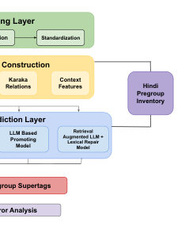
<figcaption class="paper-figure-caption"><b>Fig 1.</b> Fig. 1. Pipeline for automatic Hindi pregroup supertagging.</figcaption>
</figure>
</div>
<p><strong>Summary.</strong> This paper tackles the challenge of automatically tagging grammatical structures in Hindi to enable scalable Quantum Natural Language Processing (QNLP). By treating supertagging as a classification task, the authors compared various machine learning approaches. They found that while LLMs are powerful, they require explicit symbolic constraints, like lexical repair, to perform reliably, suggesting a path toward automating complex linguistic preprocessing.</p>
<p><strong>Why it may be interesting.</strong> While not directly about quantum hardware or condensed matter physics, the work demonstrates the application of formal grammar structures (pregroup grammars) to computational linguistics, which shares conceptual parallels with structured representations used in quantum information theory.</p>
<details>
<summary>Detailed structure</summary>
<p><strong>Main problem.</strong> The paper addresses the bottleneck of manually assigning grammatical types (pregroup supertagging) required to scale Quantum Natural Language Processing (QNLP) for the Hindi language.</p>
<p><strong>Main result.</strong> Contextual backoff models achieved the best performance (64.56%), significantly outperforming raw LLM prompting (11.65%), demonstrating that symbolic constraints are crucial for utility.</p>
<p><strong>Method.</strong> The task is framed as a token-level classification, comparing lexical, contextual, and LLM-assisted methods, including lexical repair, against a manually annotated corpus.</p>
<p><strong>Model / system.</strong> The underlying model is Quantum Natural Language Processing (QNLP), which uses pregroup grammars to map grammatical structure onto quantum circuits. The specific system involves Hindi language processing.</p>
<p><strong>Key observables.</strong> Token-level exact-match accuracy, comparing performance across different feature sets (lexical, contextual, LLM-constrained).</p>
<p><strong>Important parameters / regimes.</strong> The performance gap between seen/unambiguous tokens and unseen tokens, and the relative improvement gained by adding symbolic repair to LLM outputs.</p>
<p><strong>Assumptions / limitations.</strong> The primary assumption is that automatic supertagging is feasible, but the study notes the difficulty in handling unseen tokens and the necessity of symbolic constraints over raw generative power.</p>
<p><strong>Figures summary.</strong> Figure 1 illustrates the pipeline for automatic Hindi pregroup supertagging. Table 1 compares various systems' performance, while Table 3 shows diagnostic results comparing performance on seen versus unseen tokens.</p>
<p><strong>Paper structure.</strong> The paper introduces the QNLP framework and the manual annotation bottleneck, then formulates the problem as token-level classification. It evaluates multiple methods (lexical, contextual, LLM-based) and concludes by analyzing the strengths and limitations of each approach.</p>
</details>
<details>
<summary>Abstract</summary>
<p>Quantum Natural Language Processing (QNLP) uses pregroup grammars to translate grammatical structure into diagrammatic representations and quantum circuits. Recent Hindi QNLP work has shown that Hindi-specific pregroup grammars can support grammar-sensitive compositional models, but grammatical type assignment is still largely manual, limiting scalability. This paper formulates automatic Hindi pregroup supertagging as a token-level classification task. Using a manually annotated corpus of 380 Hindi sentences, we evaluate lexical, contextual, prompting-based, lexical-repair, and suffix/morphology-aware methods. Results show that simple lexical and contextual models are strong in this low-resource setting: contextual backoff achieves the best completed accuracy of 64.56\%, while raw Qwen2.5 prompting reaches only 11.65\%. Lexical repair raises LLM-assisted prediction to 64.08\%, demonstrating the value of constraining generative outputs with symbolic grammar knowledge. Diagnostic analysis further shows that seen and unambiguous tokens are much easier than unseen tokens, and suffix/morphology features improve karaka-token accuracy but not overall performance. These results show that automatic Hindi pregroup assignment is feasible and can reduce reliance on manual annotation in future multilingual QNLP pipelines.</p>
</details>
<p><sub><a href="#top">↑ back to top</a></sub></p>

<p><a id="paper-2609.14650"></a></p>
<h3 id="self-gravitation-of-mode-quanta-in-a-causal-resonator-one-loop-finiteness-in-linearized-quantum-gravity-and-the-emergence-of-the-dark-energy-scale"><a href="http://arxiv.org/abs/2609.14650v1">Self-Gravitation of Mode Quanta in a Causal Resonator: One-Loop Finiteness in Linearized Quantum Gravity and the Emergence of the Dark-Energy Scale</a></h3>
<p><strong>Authors:</strong> Christian Rembe<br>
<strong>Type:</strong> theory · <strong>Category:</strong> other · <strong>PDF:</strong> <a href="https://arxiv.org/pdf/2609.14650v1">https://arxiv.org/pdf/2609.14650v1</a><br>
<strong>Analysis basis:</strong> full PDF text, analyzed in chunks</p>
<div class="figure-strip-hint">↔ Scroll figures horizontally</div>
<div class="paper-figures-scroll">
<figure class="paper-figure-card">
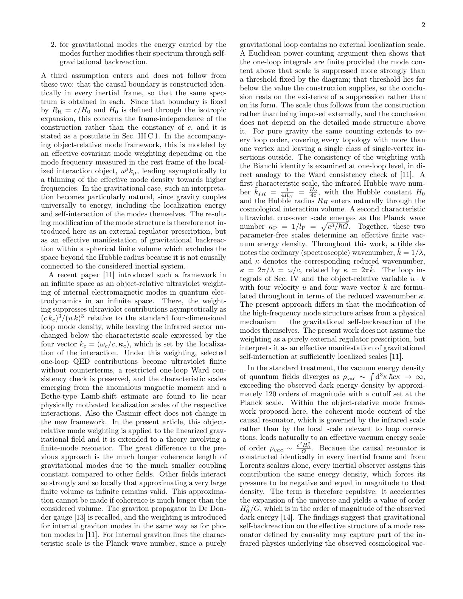
<figcaption class="paper-figure-caption"><b>Fig 1.</b> Low-resolution page preview, page 2</figcaption>
</figure>
<figure class="paper-figure-card">
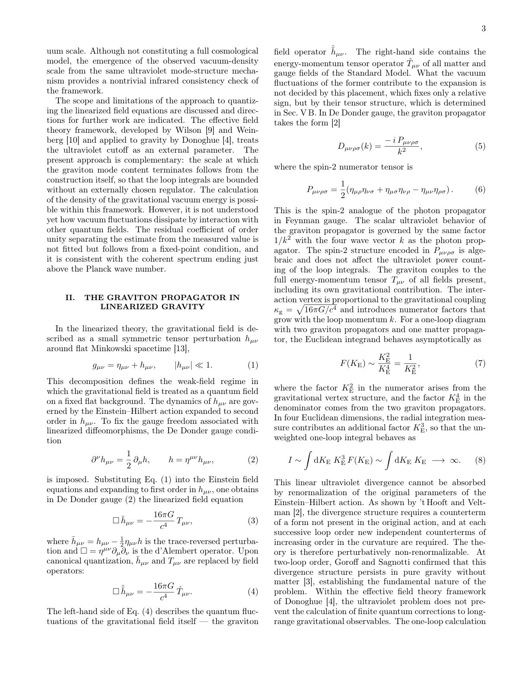
<figcaption class="paper-figure-caption"><b>Fig 2.</b> Low-resolution page preview, page 3</figcaption>
</figure>
<figure class="paper-figure-card">
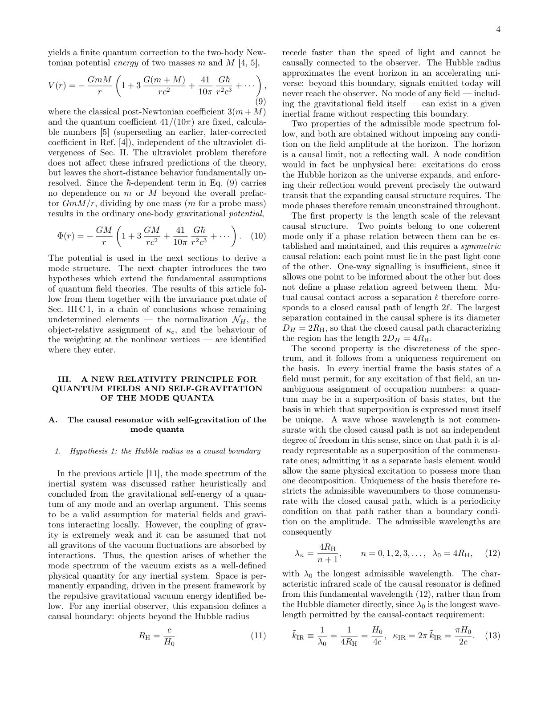
<figcaption class="paper-figure-caption"><b>Fig 3.</b> Low-resolution page preview, page 4</figcaption>
</figure>
<figure class="paper-figure-card">
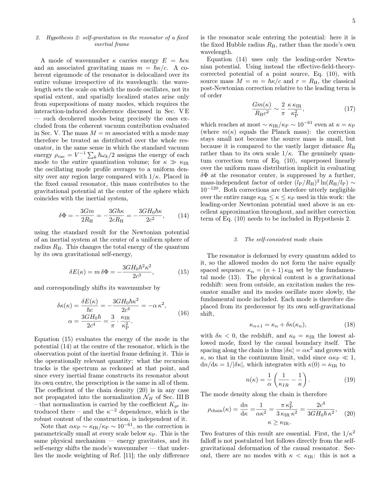
<figcaption class="paper-figure-caption"><b>Fig 4.</b> Low-resolution page preview, page 5</figcaption>
</figure>
<figure class="paper-figure-card">
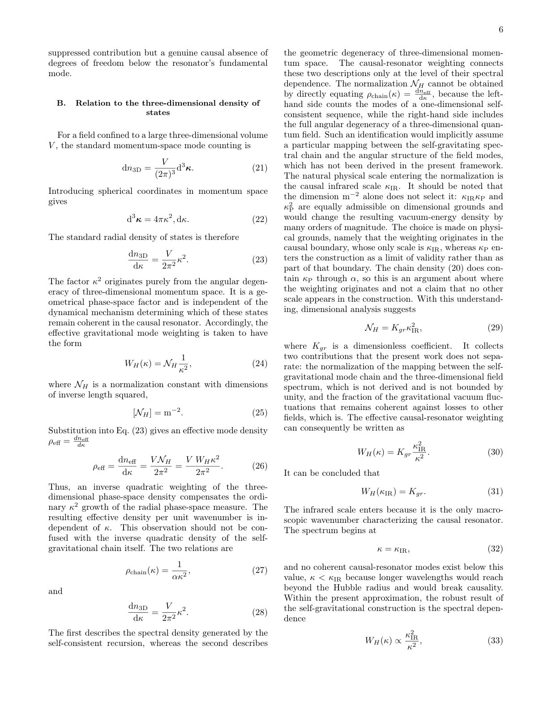
<figcaption class="paper-figure-caption"><b>Fig 5.</b> Low-resolution page preview, page 6</figcaption>
</figure>
</div>
<p><strong>Summary.</strong> This theoretical work tackles the divergence problem in quantum gravity by proposing that causality defines a 'causal resonator' that naturally regularizes quantum loop calculations. By applying a derived mode weighting, the authors show that the resulting finite mode content yields a vacuum energy density matching the observed dark energy scale, offering a potential resolution to the cosmological constant problem.</p>
<p><strong>Why it may be interesting.</strong> While focused on gravity, the concept of deriving a physical constraint (causality) to regularize a divergent quantum field theory calculation is conceptually related to finding natural cutoffs or constraints in many-body systems, though the specific mathematical tools are distinct.</p>
<details>
<summary>Detailed structure</summary>
<p><strong>Main problem.</strong> The paper addresses the ultraviolet divergence and non-renormalizability of perturbative quantum gravity while simultaneously aiming to derive the observed dark-energy scale from fundamental principles.</p>
<p><strong>Main result.</strong> The introduction of a causality-derived, object-relative mode weighting renders one-loop quantum gravity integrals finite, naturally yielding a vacuum energy density proportional to $H_0^2/G$ with the correct sign and magnitude.</p>
<p><strong>Method.</strong> The authors employ a novel mode-relative weighting technique applied to loop calculations in linearized quantum gravity, constrained by a 'causal resonator' defined by the Hubble radius.</p>
<p><strong>Model / system.</strong> The model is linearized quantum gravity, treating the gravitational field as a perturbation $h_{\mu
u}$ around flat spacetime. The key physical constraint is the causal boundary defined by the Hubble radius, which dictates the available mode spectrum.</p>
<p><strong>Key observables.</strong> Vacuum energy density ($
ho_{vac}$), which is predicted to be $\sim H_0^2/G$, and the convergence of one-loop integrals.</p>
<p><strong>Important parameters / regimes.</strong> The Hubble radius ($R_H$), the Planck length ($l_P$), and the resulting characteristic scales $   ilde{k}_{IR} = H_0/(4c)$ and $\kappa_P = 1/l_P$.</p>
<p><strong>Assumptions / limitations.</strong> The primary assumptions include that physical mode spectra are constrained by causal coherence, that gravitational self-backreaction deforms the mode spectrum, and that the causal boundary is consistently defined across all inertial frames.</p>
<p><strong>Paper structure.</strong> The paper progresses by first identifying the divergence problem in quantum gravity, then introducing the causal resonator and the associated mode weighting derived from causality. It applies this weighting to calculate one-loop corrections, demonstrating finiteness, and finally uses the resulting finite mode content to calculate the vacuum energy density, linking it to the dark energy scale.</p>
</details>
<details>
<summary>Abstract</summary>
<p>Perturbative quantum gravity is ultraviolet divergent and, as shown by 't Hooft and Veltman, non-renormalizable. A recent object-relative, Lorentz-invariant weighting of internal electromagnetic modes renders selected one-loop contributions of quantum electrodynamics finite without counterterms. Here that weighting is derived rather than postulated: causality defines a mode resonator bounded by the Hubble radius and re-defined in every inertial frame, and the self-gravitation of each mode quantum deforms its spectrum. Applied to linearized gravity, the graviton self-coupling reaches order unity at the Planck wave number, so that the mode content available to a loop is suppressed beyond it. Any suppression exceeding a threshold fixed by the diagram renders the one-loop integrals finite; no cutoff is imposed and no mode structure above the Planck scale need be derived. For pure gravity the same power counting extends to every loop order, and the leading suppression already meets the resulting condition for every topology with more than one vertex; a single class of single-vertex insertions is excluded. The Bianchi identity takes the role of the Ward identity at one loop, and the transformation between the resonators of two inertial frames is unitary. The same finite mode content yields a vacuum energy density of order H^2/G, of the observed sign and magnitude, from the Planck and causal infrared wave numbers alone. A contribution tracking the instantaneous expansion rate is an exact rescaling of the gravitational constant and is excluded by primordial nucleosynthesis, so the mode basis must be frozen in any inertial system; referring it to the stationary de Sitter horizon fixes the remaining coefficient to the geometric value 6/pi and makes a value for the energy density of gravitational vacuum fluctuations possible which can be interpreted as origin of the dark-energy effect.</p>
</details>
<p><sub><a href="#top">↑ back to top</a></sub></p>

<p><a id="paper-2609.15428"></a></p>
<h3 id="shannon-entropy-as-an-order-parameter-for-the-two-dimensional-confined-coulomb-systems-exact-balance-law-topological-charge-sum-rule-and-boundary-saturation"><a href="http://arxiv.org/abs/2609.15428v1">Shannon Entropy as an Order Parameter for the Two-Dimensional Confined Coulomb Systems: Exact Balance Law, Topological Charge Sum Rule, and Boundary Saturation</a></h3>
<p><strong>Authors:</strong> Goergiy K. Lavrov, Eduard G. Nikonov<br>
<strong>Type:</strong> theory · <strong>Category:</strong> statistical mechanics · <strong>PDF:</strong> <a href="https://arxiv.org/pdf/2609.15428v1">https://arxiv.org/pdf/2609.15428v1</a><br>
<strong>Analysis basis:</strong> full PDF text, analyzed in chunks</p>
<div class="figure-strip-hint">↔ Scroll figures horizontally</div>
<div class="paper-figures-scroll">
<figure class="paper-figure-card">
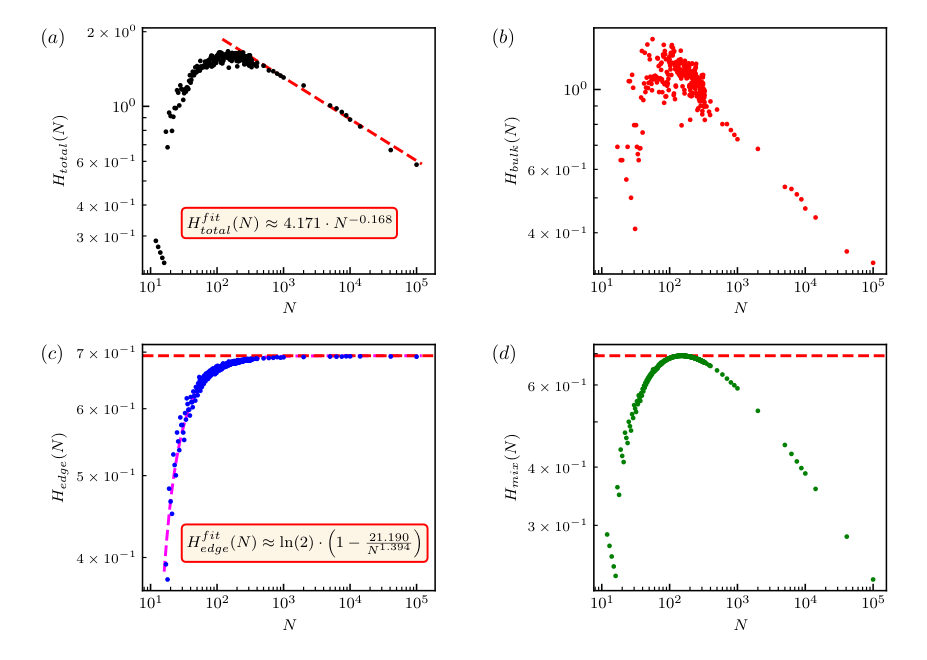
<figcaption class="paper-figure-caption"><b>Fig 1.</b> FIG. 1. (a) Total, (b) bulk, (c) edge, and (d) mixing entropies vs. N; Htotal peaks at N = 146;</figcaption>
</figure>
<figure class="paper-figure-card">
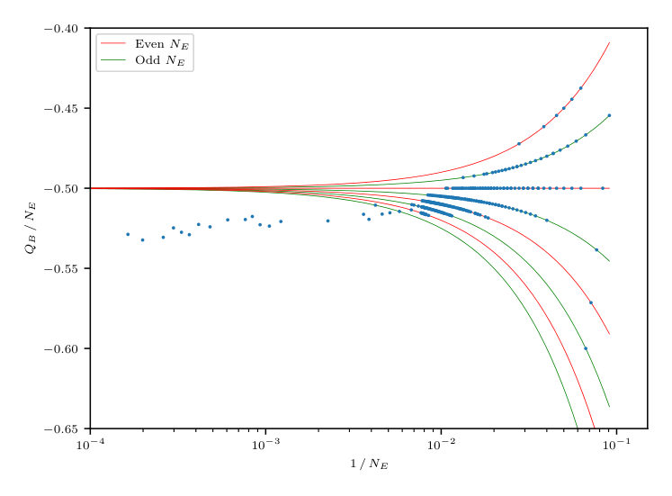
<figcaption class="paper-figure-caption"><b>Fig 2.</b> FIG. 2. Scaling plot of QB/NE vs. 1/NE: according to Eq. 14, all rays converge to −1/2,</figcaption>
</figure>
<figure class="paper-figure-card">
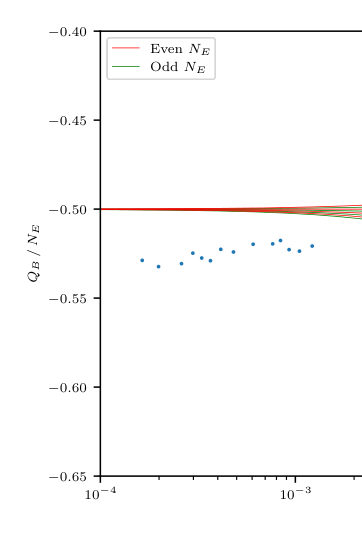
<figcaption class="paper-figure-caption"><b>Fig 3.</b> Figure 1(c) shows Hedge(N): it rises steeply for N &lt; 1000 and then saturates,</figcaption>
</figure>
</div>
<p><strong>Summary.</strong> This paper develops an exact information-theoretic framework using Shannon entropy to analyze the minimum-energy states of 2D confined Coulomb systems. Key results include an entropy balance law and a topological charge sum rule that precisely constrain the system's structure. This work establishes deep mathematical connections between statistical mechanics, topology, and information theory in classical many-body systems.</p>
<p><strong>Why it may be interesting.</strong> The use of information theory (Shannon entropy) as a rigorous order parameter to characterize the equilibrium structure of classical interacting particle systems provides a powerful, generalizable mathematical tool for condensed matter physics.</p>
<details>
<summary>Detailed structure</summary>
<p><strong>Main problem.</strong> To establish a complete, exact information-theoretic framework linking the topological complexity of minimum-energy configurations in 2D confined Coulomb systems to measurable quantities.</p>
<p><strong>Main result.</strong> The authors prove an entropy balance law and a topological charge sum rule, yielding exact relations between boundary and bulk particle populations.</p>
<p><strong>Method.</strong> The analysis uses Shannon entropy decomposition, topological arguments (Voronoi tessellation), and rigorous mathematical proofs applied to numerically verified minimum-energy configurations.</p>
<p><strong>Model / system.</strong> The system consists of $N$ identical point charges interacting via the $1/r$ Coulomb potential, confined within a two-dimensional disk by a hard-wall potential.</p>
<p><strong>Key observables.</strong> Total, bulk, boundary, and mixing Shannon entropies ($H_{total}, H_{bulk}, H_{edge}, H_{mix}$); Topological charge sum ($\sum q_i$); Coordination number populations ($n_3, n_4$).</p>
<p><strong>Important parameters / regimes.</strong> System size $N$ ($12$ to $10^5$); Boundary particle count $N_E$; Bulk charge density $Q_B/N_E$.</p>
<p><strong>Assumptions / limitations.</strong> The derived identities apply to local minima satisfying topological conditions; the core results rely on two empirical inputs (Observations III.1 and III.2) specific to Coulomb minima.</p>
<p><strong>Figures summary.</strong> The notes indicate the presence of figures showing the evolution of entropy components ($H_{total}, H_{bulk}, H_{edge}, H_{mix}$) versus system size $N$, and tables presenting systematic numerical data across varying parameters.</p>
<p><strong>Paper structure.</strong> The paper develops the framework by first defining the system and entropy components, then proving the Entropy Balance Law and the Topological Charge Sum Rule, followed by deriving constraints on boundary/bulk populations, and concluding with the analysis of boundary entropy saturation.</p>
</details>
<details>
<summary>Abstract</summary>
<p>We establish a complete information-theoretic framework for the known minimum-energy configurations of the two-dimensional Thomson problem on a hard-wall disk, based on the Shannon entropy of the Voronoi topological charge distribution. Two exact results are proven and hold for all studied systems of size $N=12$--$10^5$. First, an entropy balance law decomposes the total entropy into bulk, boundary, and mixing contributions without approximation. Second, a topological charge sum rule fixes the total charge at twice the number of boundary particles plus six; together with the observed separation of bulk and boundary coordination numbers, it yields exact relations between the populations of three- and four-coordinated boundary particles and the bulk charge. We further prove that the boundary entropy is bounded by the binary maximum and that saturation of this bound is equivalent to the bulk charge per boundary particle approaching minus one half, a regime that the framework itself restricts to boundaries of at least twelve particles. All identities are verified numerically to machine precision, locating bulk nucleation at $56$ particles, the maximum of global disorder at $146$, and the onset of boundary saturation beyond about $1000$. The framework carries over to closed spherical geometry, where the total charge is fixed at twelve.</p>
</details>
<p><sub><a href="#top">↑ back to top</a></sub></p>

<p><a id="paper-2609.15443"></a></p>
<h3 id="sharp-bounds-on-the-mean-efficiency-of-a-fluctuating-machine"><a href="http://arxiv.org/abs/2609.15443v1">Sharp Bounds on the Mean Efficiency of a Fluctuating Machine</a></h3>
<p><strong>Authors:</strong> Badr Farih<br>
<strong>Type:</strong> theory · <strong>Category:</strong> statistical mechanics · <strong>PDF:</strong> <a href="https://arxiv.org/pdf/2609.15443v1">https://arxiv.org/pdf/2609.15443v1</a><br>
<strong>Analysis basis:</strong> full PDF text, analyzed in chunks</p>
<div class="figure-strip-hint">↔ Scroll figures horizontally</div>
<div class="paper-figures-scroll">
<figure class="paper-figure-card">
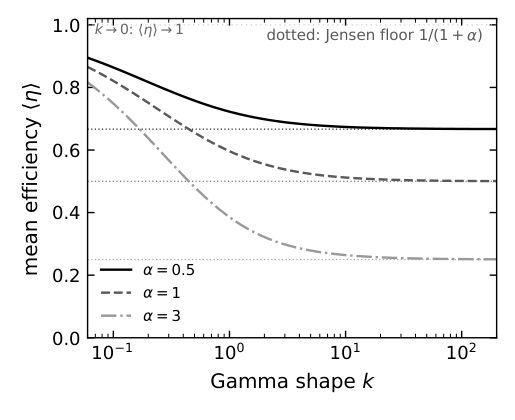
<figcaption class="paper-figure-caption"><b>Fig 1.</b> Fig. 1 Mean efficiency (10) against the Gamma shape k at fixed mean dissipation, for three values of α. Increasing k makes the dissipation more predictable at the same mean; the curves descend monotonically (Proposition 4) onto the Jensen floors 1/(1 + α) (fine dotted) and rise towards 1 as k →0 (Corollary 1)</figcaption>
</figure>
<figure class="paper-figure-card">
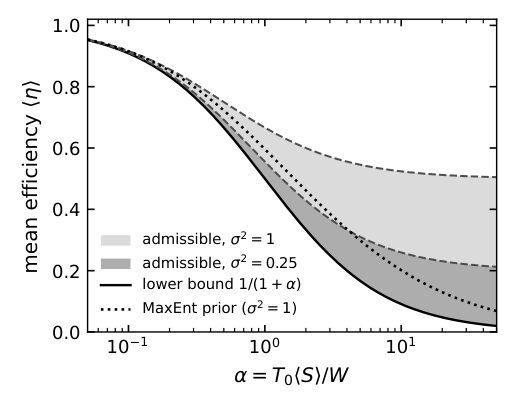
<figcaption class="paper-figure-caption"><b>Fig 2.</b> Fig. 2 The admissible interval (20) as a function of α, for two values of the relative variance σ2 of the dissipation. The lower edge is the prior-free bound of Proposition 2 and is common to both; the upper edges (dashed) are Proposition 5. Shrinking σ2 closes the band onto the deterministic value. The dotted curve is the maximum-entropy result (41), which has σ2 = 1 and lies inside the corresponding band at every α</figcaption>
</figure>
<figure class="paper-figure-card">
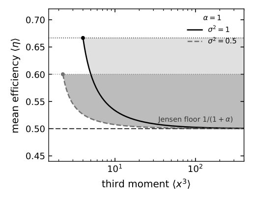
<figcaption class="paper-figure-caption"><b>Fig 3.</b> Fig. 3 The bracket (30) at α = 1 as a function of the third moment, for two values of σ2. Upper edges (fine dotted) are U(α, σ2), independent of m3; lower edges are L from (24). Circles mark mmin 3 = (1 + σ2)2, where the bracket closes to a point. The long-dashed line is the Jensen floor, approached as m3 →∞</figcaption>
</figure>
<figure class="paper-figure-card">
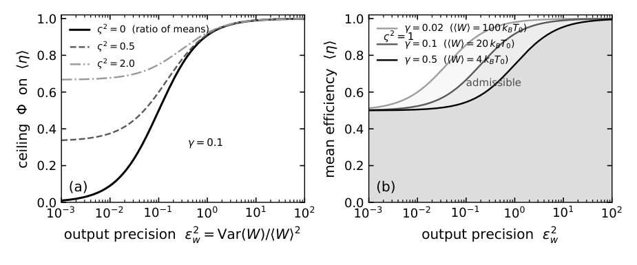
<figcaption class="paper-figure-caption"><b>Fig 4.</b> Fig. 4 The precision–efficiency frontier (37) at r = 1. (a) Φ against the relative variance ϵ2 w of the delivered work, for three values of the dissipation’s relative variance ς2, at γ = 0.1. The solid curve ς2 = 0 is the bound of [18], which constrains the ratio of means; the mean efficiency is bounded by the higher curves, and applying the ς2 = 0 curve to it is unsafe. (b) The admissible region in the (ϵ2 w, ⟨η⟩) plane at ς2 = 1 for three values of γ = 2kBT0/⟨W⟩: a smaller machine is pushed further from the top-left corner, where precise output and high efficiency would coexist</figcaption>
</figure>
<figure class="paper-figure-card">
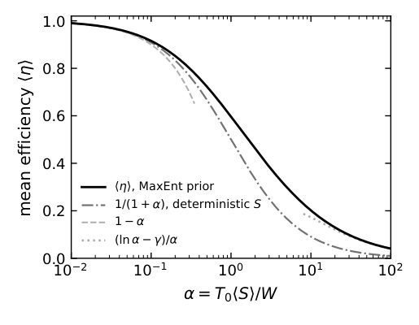
<figcaption class="paper-figure-caption"><b>Fig 5.</b> Fig. 5 Mean efficiency (41) under the maximum-entropy prior (solid) against α = T0⟨S⟩/W, compared with the deterministic value 1/(1+α) (dash-dotted). Light dashed and dotted curves show the near-reversible form 1 −α and the strongly dissipative form (ln α −γ)/α, each plotted only where it is accurate. The vertical separation between the solid and dash-dotted curves is the fluctuation enhancement of Proposition 2; on this linear ordinate it peaks near α ≈3.4 and closes at both ends, while the ratio of the two curves grows without bound</figcaption>
</figure>
</div>
<p><strong>Summary.</strong> This work derives sharp, moment-based bounds on the mean efficiency of a fluctuating thermodynamic machine using the exergetic ratio. It shows that the mean efficiency is constrained between a lower bound set by Jensen's inequality and an upper bound related to the dissipation's variance. The results are significant because they provide quantitative predictions about energy conversion efficiency under realistic thermal fluctuations.</p>
<p><strong>Why it may be interesting.</strong> It provides rigorous, fluctuation-based constraints on thermodynamic performance metrics, extending classical bounds by incorporating the statistical nature of energy dissipation.</p>
<details>
<summary>Detailed structure</summary>
<p><strong>Main problem.</strong> The paper determines the sharp bounds on the mean efficiency of a machine operating at the scale of thermal fluctuations, given only energy budget information.</p>
<p><strong>Main result.</strong> The mean efficiency $\langle\eta
angle$ is bounded by $rac{1}{1 + \alpha} &lt; \langle\eta
angle \le rac{\sigma^2}{1 + \sigma^2} + rac{1}{(1 + \sigma^2)}[1 + \alpha(1 + \sigma^2)]$, with the lower bound set by Jensen's inequality.</p>
<p><strong>Method.</strong> The analysis uses moment-based machinery (Chebyshev–Markov) on the exergetic ratio $\eta = W/(W + T_0S)$ to derive sharp bounds without assuming a specific probability distribution.</p>
<p><strong>Model / system.</strong> The model is a general thermodynamic machine operating near equilibrium, characterized by useful work $W$ and entropy production $S$. The analysis focuses on the exergetic ratio $\eta$, which is preferred over conventional efficiency because its denominator does not fluctuate through zero.</p>
<p><strong>Key observables.</strong> Exergetic ratio ($\eta$), mean efficiency ($\langle\eta
angle$), mean dissipation ($\langle S 
angle$), and relative variance of dissipation ($\sigma^2$).</p>
<p><strong>Important parameters / regimes.</strong> The dimensionless parameter $\alpha = T_0\langle S
angle/W$ and the relative variance $\sigma^2$ are crucial for defining the bounds.</p>
<p><strong>Assumptions / limitations.</strong> The analysis crucially assumes non-negative entropy production ($S \ge 0$) for the mean efficiency to exist, and initial derivations condition expectations on the delivered work $W$.</p>
<p><strong>Figures summary.</strong> Table 3 compares the mean efficiency calculated using a fluctuation-theorem prior versus an exponential prior, showing the agreement improves as the mean dissipation grows.</p>
<p><strong>Paper structure.</strong> The paper establishes the problem using the exergetic ratio, derives the sharp bounds using moment methods, and then explores extensions by removing the conditioning on work $W$ to find a precision–efficiency frontier.</p>
</details>
<details>
<summary>Abstract</summary>
<p>The efficiency of a machine at the scale of thermal fluctuations is a random variable that conventionally has no moments of any order: the input heat in the denominator of $-W/Q_h$ fluctuates through zero. We work instead with the exergetic ratio $η=W/(W+T_0S)$, whose denominator vanishes only with its numerator, so that for non-negative dissipation it lies in $[0,1]$ pointwise and every moment exists, and we ask what the energy budget alone determines about its mean. With $α=T_0\langle S\rangle/W$ the mean dissipation per unit useful work and $σ^2$ the relative variance of the dissipation, $1/(1+α)<\langleη\rangle\leσ^2/(1+σ^2)+1/[(1+σ^2)(1+α(1+σ^2))]$, with both ends sharp and no distributional assumption. The lower bound is Jensen's inequality: fluctuating dissipation always raises the mean efficiency above its deterministic value. The upper bound is attained by an intermittently reversible law, which dissipates nothing at all in a fraction $σ^2/(1+σ^2)$ of realisations; it is a moment-problem extremal rather than a realised machine, but a stability result turns it into a prediction: a device measured near the bound must operate intermittently, testable against the trajectory record alone. A third moment closes the bracket entirely. When the delivered work also fluctuates, the bounds hold with the moments taken on the ratio $T_0S/W$, and the thermodynamic uncertainty relation then converts the ceiling into a precision-efficiency frontier: a machine with more reproducible output has a strictly lower efficiency ceiling. At zero dissipation variance this reduces to the known bound on a molecular motor's ratio-of-means efficiency, identifying it as one member of a family and showing it unsafe for the mean of the fluctuating ratio. Inside the interval lies the maximum-entropy benchmark $α^{-1}e^{1/α}E_1(1/α)$.</p>
</details>
<p><sub><a href="#top">↑ back to top</a></sub></p>

<p><a id="paper-2609.14788"></a></p>
<h3 id="systematic-construction-of-multiqubit-unextendible-product-bases"><a href="http://arxiv.org/abs/2609.14788v1">Systematic construction of multiqubit unextendible product bases</a></h3>
<p><strong>Authors:</strong> Caohan Cheng, Lin Chen<br>
<strong>Type:</strong> theory · <strong>Category:</strong> quantum information and computing · <strong>PDF:</strong> <a href="https://arxiv.org/pdf/2609.14788v1">https://arxiv.org/pdf/2609.14788v1</a><br>
<strong>Analysis basis:</strong> full PDF text, analyzed in chunks</p>
<div class="figure-strip-hint">↔ Scroll figures horizontally</div>
<div class="paper-figures-scroll">
<figure class="paper-figure-card">
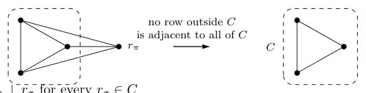
<figcaption class="paper-figure-caption"><b>Fig 1.</b> Figure 3: Construction from the completion graph. In (a)–(b), kij denotes the original entry in row i and column j. kij denotes its mate in the same column. Hence every new entry is the mate of the original entry given by the two subscripts. In (c)–(d), every black point represents a completion row. A line joins two orthogonal rows. The set C is marked by the dashed box.</figcaption>
</figure>
<figure class="paper-figure-card">
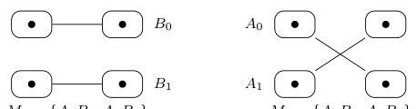
<figcaption class="paper-figure-caption"><b>Fig 2.</b> Figure 4: The construction with two added columns. The two input UOMs use different alphabets. In each added column, the entries are constant on every decomposition block. The bars indicate the mate relation between the entries. The two factor graphs used for the added columns are shown in panels (b) and (c).</figcaption>
</figure>
<figure class="paper-figure-card">
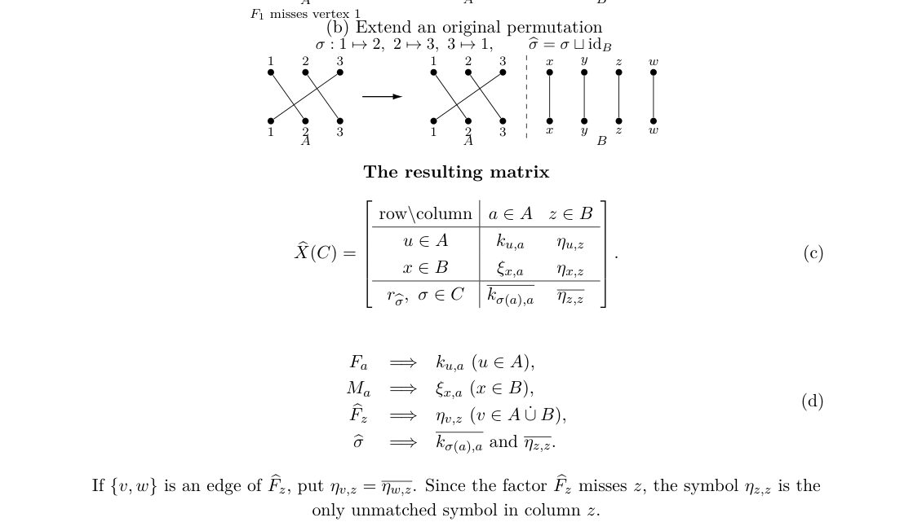
<figcaption class="paper-figure-caption"><b>Fig 3.</b> Figure 5: The lift of a square kernel. In panel (a), the one-factor M1 is added to the original factor F1. In panel (b), the permutation on A is kept, while every element of B is fixed. The full matrix obtained from the construction is given in panel (c), and panel (d) explains where each family of its entries comes from.</figcaption>
</figure>
<figure class="paper-figure-card">
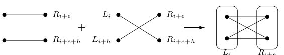
<figcaption class="paper-figure-caption"><b>Fig 4.</b> Figure 6: The joining of two lifted input UOMs by merging factor columns. All entries of the resulting matrix are given in panel (a). Panel (b) compares a pair of factor columns with the merged column. The same operation on the decomposition blocks is shown in panels (c)–(e). The four edges in panel (e) form the graph K2,2.</figcaption>
</figure>
<figure class="paper-figure-card">
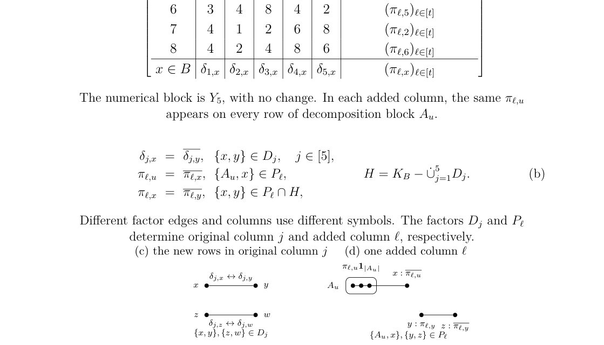
<figcaption class="paper-figure-caption"><b>Fig 5.</b> Figure 7: Odd padding used in Corollary 27. The 8 × 5 block is the original matrix Y5. The δ-entries give the five removed factors Dj on the new single rows. The π-entries give the factors Pℓ. They have the same value on all rows of one original decomposition block. Panels (c)–(d) show how the mate equations in (b) determine the entries.</figcaption>
</figure>
</div>
<p><strong>Summary.</strong> This paper provides a comprehensive, systematic mathematical construction for multiqubit unextendible product bases (UPBs). By translating the problem into the study of unextendible orthogonal matrices (UOMs) and applying graph theory, the authors determine the exact size spectrum for these crucial quantum structures. This work advances the theoretical understanding of resource constraints in multiqubit quantum information processing.</p>
<p><strong>Why it may be interesting.</strong> The rigorous mathematical characterization of UPBs provides fundamental constraints on quantum state properties, which is crucial for understanding entanglement measures and nonlocality in quantum information protocols.</p>
<details>
<summary>Detailed structure</summary>
<p><strong>Main problem.</strong> The paper systematically determines the complete size spectrum for multiqubit unextendible product bases (UPBs).</p>
<p><strong>Main result.</strong> The authors provide a complete characterization of the possible sizes of multiqubit UPBs in every dimension, establishing necessary and sufficient conditions for their existence.</p>
<p><strong>Method.</strong> The research employs advanced graph-theoretic methods, including analyzing unextendible orthogonal matrices (UOMs) via row decompositions and completion graphs.</p>
<p><strong>Model / system.</strong> The context is quantum information processing involving multiqubit systems. UPBs are mathematically linked to the structure of UOMs, which are orthogonal matrices representing product vectors.</p>
<p><strong>Key observables.</strong> The primary observable is the set $\Theta_n$, representing the possible sizes $m$ for an $n$-qubit UPB.</p>
<p><strong>Important parameters / regimes.</strong> The dimension $n$ (number of qubits) and the size $m$ (number of product vectors) are the key parameters. Specific constraints involve parity of $n$ and structural counts.</p>
<p><strong>Assumptions / limitations.</strong> The analysis relies on the formal matrix structure capturing the necessary information for the physical UPB realization, and the use of graph-theoretic theorems.</p>
<p><strong>Figures summary.</strong> Figures illustrate various constructions (e.g., row-decomposition, matching core) of UOMs, demonstrating specific examples like $M_{13,9}$ and $M_{15,10}$ as valid structures.</p>
<p><strong>Paper structure.</strong> The paper progresses by defining the formal mathematical framework (UOMs, fibre supports), establishing necessary and sufficient conditions for extendibility (Theorem 4), and then applying graph theory to systematically determine the complete size spectrum $\Theta_n$ for all dimensions.</p>
</details>
<details>
<summary>Abstract</summary>
<p>The construction of multiqubit unextendible product bases (UPBs) has been a long-standing problem. We give a systematic construction of multiqubit UPBs by studying their unextendible orthogonal matrices (UOMs) with graph-theoretic methods. Row decompositions of small UOMs produce the main intervals. Com- pletion graphs settle the remaining small UPB sizes, except for one size obtained from a good column structure. Nonexistence of the other UPB sizes follows from counts of fibres and row pairs. The computer is used only for a few finite UOM checks, whose exact tests are stated in the certificate appendix. These arguments determine the complete multiqubit UPB size spectrum in every dimension.</p>
</details>
<p><sub><a href="#top">↑ back to top</a></sub></p>

<p><a id="paper-2609.14665"></a></p>
<h3 id="thermodynamic-geometry-of-an-ideal-quon-gas"><a href="http://arxiv.org/abs/2609.14665v1">Thermodynamic Geometry of an Ideal Quon Gas</a></h3>
<p><strong>Authors:</strong> Leila Yousefzadeh, Hosein Mohammadzadeh, Habib Esmaili, Zahra Ebadi, Morteza Nattagh Najafi<br>
<strong>Type:</strong> theory · <strong>Category:</strong> statistical mechanics · <strong>PDF:</strong> <a href="https://arxiv.org/pdf/2609.14665v1">https://arxiv.org/pdf/2609.14665v1</a><br>
<strong>Analysis basis:</strong> full PDF text, analyzed in chunks</p>
<div class="figure-strip-hint">↔ Scroll figures horizontally</div>
<div class="paper-figures-scroll">
<figure class="paper-figure-card">
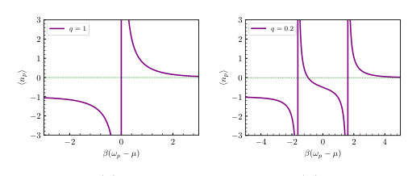
<figcaption class="paper-figure-caption"><b>Fig 1.</b> FIG. 1: Average occupation number ⟨np⟩as a function of the reduced parameter β(ωp −µ) for representative values of the deformation parameter q.</figcaption>
</figure>
<figure class="paper-figure-card">
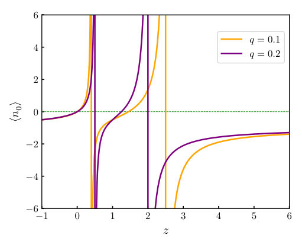
<figcaption class="paper-figure-caption"><b>Fig 2.</b> FIG. 2: Zero-energy ground-state occupation number ⟨n0⟩as a function of the fugacity z for various values of the deforma- tion parameter q. The algebraic poles partition the fugacity domain into disconnected regions. For 0 &lt; q &lt; 1, the lower interval terminating at z = q constitutes the physically viable thermodynamic state space.</figcaption>
</figure>
<figure class="paper-figure-card">
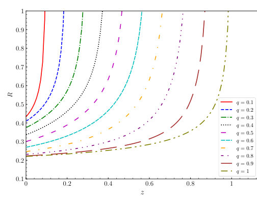
<figcaption class="paper-figure-caption"><b>Fig 3.</b> FIG. 3: Thermodynamic curvature R as a function of the fugacity z for an ideal three-dimensional quon gas (D = 3) with σ = 2 and β = 1. The curves are shown for q = 0.1, 0.2, 0.3, 0.4, 0.5, 0.6, 0.7, 0.8, 0.9, and q = 1.</figcaption>
</figure>
<figure class="paper-figure-card">

<figcaption class="paper-figure-caption"><b>Fig 4.</b> Figure 3 shows the thermodynamic curvature R as a function of the fugacity z for several representative values of the deformation parameter q. The figure illustrates the variation of the curvature with fugacity for different values of q.</figcaption>
</figure>
<figure class="paper-figure-card">
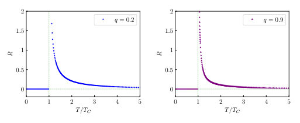
<figcaption class="paper-figure-caption"><b>Fig 5.</b> FIG. 5: Thermodynamic scalar curvature R as a function of the reduced temperature T/Tc for q = 0.2 (panel a) and q = 0.9 (panel b).</figcaption>
</figure>
</div>
<p><strong>Summary.</strong> This work develops a thermodynamic and geometric framework for an ideal quon gas, a generalization of bosonic systems. By analyzing the Fisher-Rao metric, the authors show that the scalar curvature provides a clear geometric signature for the Bose-Einstein condensation transition. The curvature diverges at the critical point and vanishes in the condensed phase, confirming the physical interpretation of the quon deformation parameter.</p>
<p><strong>Why it may be interesting.</strong> The use of geometric tools (Riemannian curvature) to characterize phase transitions (like BEC) provides a powerful, universal diagnostic tool for many-body quantum systems, extending beyond standard thermodynamic potentials.</p>
<details>
<summary>Detailed structure</summary>
<p><strong>Main problem.</strong> The paper investigates the equilibrium thermodynamics and the associated Riemannian geometry of an ideal quon gas.</p>
<p><strong>Main result.</strong> The thermodynamic scalar curvature remains strictly positive, confirming an effectively attractive interaction, and exhibits a definitive divergence at the critical condensation threshold, while vanishing below it.</p>
<p><strong>Method.</strong> The analysis employs the grand canonical ensemble, calculates thermodynamic quantities using generalized polylogarithms, and applies the Fisher-Rao metric to determine the scalar curvature of the state space.</p>
<p><strong>Model / system.</strong> The system is an ideal quon gas, which generalizes standard bosonic behavior via a deformation parameter $q$. The model is analyzed in the grand canonical ensemble, using a generalized occupation number $\langle n_p 
angle$.</p>
<p><strong>Key observables.</strong> Thermodynamic scalar curvature ($R$), average occupation number ($\langle n_p 
angle$), and the chemical potential ($\mu$).</p>
<p><strong>Important parameters / regimes.</strong> The deformation parameter $q$, the fugacity ($z$), and the reduced temperature ($T/T_c$).</p>
<p><strong>Assumptions / limitations.</strong> The physical state space is restricted by enforcing thermodynamic continuity and single-valuedness, leading to the exclusion of mathematical branches.</p>
<p><strong>Figures summary.</strong> Figures illustrate the average occupation number for different $q$, the ground-state occupation number showing poles at $z=q$ and $z=1/q$, and the scalar curvature $R$ vs. temperature/fugacity, showing divergence at $T_c$ and zero below $T_c$.</p>
<p><strong>Paper structure.</strong> The paper first establishes the model and calculates the grand potential. It then analyzes the ground-state occupation to define the physically admissible fugacity domain ($0 < z \le q$). Finally, it constructs the thermodynamic metric and calculates the scalar curvature $R$ across different temperature regimes, linking geometric features to phase transitions.</p>
</details>
<details>
<summary>Abstract</summary>
<p>We investigate the equilibrium thermodynamics and thermodynamic Riemannian geometry of an ideal quon gas within the grand canonical ensemble. By incorporating the algebraic deformation parameter $q$, the system generalizes standard bosonic behavior while recovering the conventional ideal Bose gas in the undeformed limit. A rigorous examination of the ground-state occupation reveals two disconnected mathematical domains of the fugacity. By enforcing thermodynamic continuity, single-valuedness, and consistency with the high-temperature classical limit, we exclude the second mathematical branch and establish the lower interval as the unique physically admissible state space. This identifies the deformation parameter as an intrinsic, generalized Bose--Einstein condensation threshold. Employing the Fisher-Rao metric on the equilibrium parameter manifold, we probe the thermodynamic scalar curvature across all temperature regimes. The scalar curvature remains strictly positive throughout the physical domain, confirming that the deformation preserves an effectively attractive statistical interaction without inducing fermionic tendencies. Near the critical condensation threshold, the curvature increases sharply and exhibits a definitive divergence, providing an unambiguous geometric signature of macroscopic coherence and critical fluctuations. Below the transition temperature, the pinning of fugacity eliminates a fluctuating degree of freedom, collapsing the scalar curvature to zero.</p>
</details>
<p><sub><a href="#top">↑ back to top</a></sub></p>

<p><a id="paper-2609.13787"></a></p>
<h3 id="thermodynamic-geometry-of-inclusion-statistics"><a href="http://arxiv.org/abs/2609.13787v1">Thermodynamic geometry of inclusion statistics</a></h3>
<p><strong>Authors:</strong> M. H. Naghizadeh Ardabili, Omid Yahyayi Monem, Habib Esmaili, Zahra Ebadi, Hosein Mohammadzadeh<br>
<strong>Type:</strong> theory · <strong>Category:</strong> statistical mechanics · <strong>PDF:</strong> <a href="https://arxiv.org/pdf/2609.13787v1">https://arxiv.org/pdf/2609.13787v1</a><br>
<strong>Analysis basis:</strong> full PDF text, analyzed in chunks</p>
<div class="figure-strip-hint">↔ Scroll figures horizontally</div>
<div class="paper-figures-scroll">
<figure class="paper-figure-card">
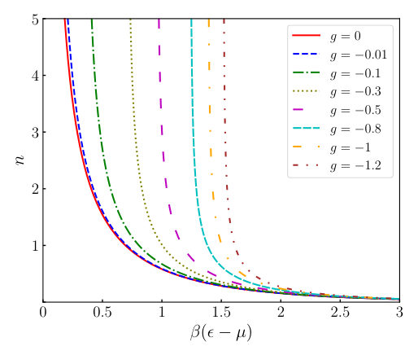
<figcaption class="paper-figure-caption"><b>Fig 1.</b> FIG. 1: Distribution function of g-inclusion statistics as a function of β(ϵ −µ) for different values of g.</figcaption>
</figure>
<figure class="paper-figure-card">
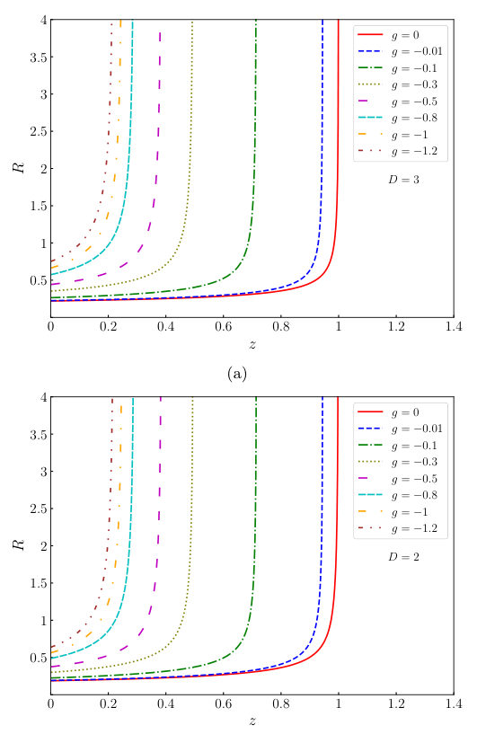
<figcaption class="paper-figure-caption"><b>Fig 2.</b> FIG. 2: Thermodynamic curvature as a function of fu- gacity for isothermal processes (β = 1). (a) In a 3- dimensional ideal g-inclusion-statistics gas with σ = 2 (non-relativistic regime). (b) In a 2-dimensional ideal g-inclusion-statistics gas with σ = 1 (ultra-relativistic regime).</figcaption>
</figure>
<figure class="paper-figure-card">
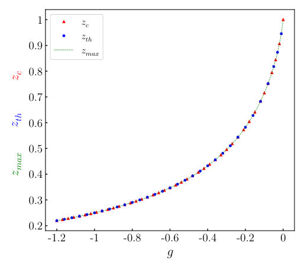
<figcaption class="paper-figure-caption"><b>Fig 3.</b> FIG. 3: critical fugacity zc, threshold fugacity zth, and maximum fugacity zmax as functions of the statistical parameter g for D = 3 and σ = 2.</figcaption>
</figure>
<figure class="paper-figure-card">
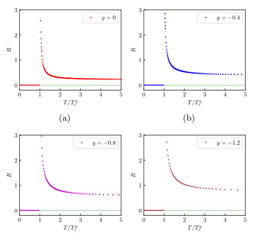
<figcaption class="paper-figure-caption"><b>Fig 4.</b> FIG. 4: Thermodynamic curvature as a function of the reduced temperature T/T g c in a three-dimensional ideal g-inclusion-statistics gas with σ = 2. The curves are shown for g = 0, −0.4, −0.8, −1.2. The divergence of the curvature at T/T g c = 1 indicates the presence of a phase transition and condensation.</figcaption>
</figure>
<figure class="paper-figure-card">
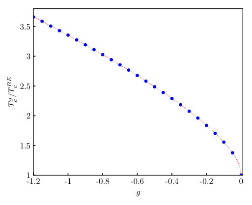
<figcaption class="paper-figure-caption"><b>Fig 5.</b> FIG. 5: Ratio of the g-inclusion condensation temper- ature to the ordinary BE condensation temperature, T g c /T BE c , as a function of the Haldane statistical param- eter g, for D = 3 and σ = 2.</figcaption>
</figure>
</div>
<p><strong>Summary.</strong> This paper analyzes an ideal quantum gas with inclusion statistics (g &lt; 0) using the tools of thermodynamic geometry. It demonstrates that the system undergoes a Bose-Einstein condensation-like transition, characterized by the simultaneous divergence of the thermodynamic curvature and singularities in thermodynamic quantities. The findings are significant because they predict condensation in dimensional regimes where standard bosons fail to condense.</p>
<p><strong>Why it may be interesting.</strong> This work extends the understanding of quantum gases beyond standard Bose-Einstein or Fermi-Dirac statistics by incorporating inclusion statistics, providing a rigorous geometric framework to predict novel condensation phenomena in lower dimensions.</p>
<details>
<summary>Detailed structure</summary>
<p><strong>Main problem.</strong> The paper investigates the thermodynamic geometry and condensation behavior of an ideal quantum gas governed by inclusion statistics, characterized by a negative statistical parameter g.</p>
<p><strong>Main result.</strong> The study confirms that the condensation transition is consistently marked by three independent thermodynamic signatures: the divergence of the scalar curvature R, the saturation of the fugacity, and a non-analytic cusp in the specific heat. Furthermore, condensation is shown to occur in dimensions inaccessible to standard bosons.</p>
<p><strong>Method.</strong> The analysis employs the thermodynamic geometry approach, utilizing the Fisher-Rao metric derived from the grand-canonical partition function, alongside analytic continuation from fractional exclusion statistics.</p>
<p><strong>Model / system.</strong> The model is an ideal quantum gas obeying inclusion statistics, mathematically defined by the negative statistical parameter g. The analysis is performed in the grand-canonical ensemble, treating the system's thermodynamic properties.</p>
<p><strong>Key observables.</strong> Thermodynamic scalar curvature (R), maximum fugacity (z_max), condensation temperature (T_c), and specific heat (C_V).</p>
<p><strong>Important parameters / regimes.</strong> The statistical parameter g (specifically g &lt; 0), the dimensionality ratio D/sigma, and the fugacity z.</p>
<p><strong>Assumptions / limitations.</strong> The analysis relies on the analytic continuation of Haldane's fractional exclusion statistics from g &gt; 0 to g &lt; 0, and the use of the thermodynamic geometry framework.</p>
<p><strong>Figures summary.</strong> Figures illustrate the distribution function divergence, the divergence of the thermodynamic curvature R at the critical fugacity z_c, and the characteristic cusp in the scaled heat capacity C_V at the condensation temperature T_c.</p>
<p><strong>Paper structure.</strong> The paper first introduces the system and the thermodynamic geometry framework. It then derives the critical conditions, showing the coincidence of three criteria (R divergence, fugacity singularity, C_V cusp) at the condensation point. Finally, it calculates the condensation temperature in specific dimensional regimes.</p>
</details>
<details>
<summary>Abstract</summary>
<p>We investigate the thermodynamic geometry of an ideal quantum gas obeying inclusion statistics, characterized by a negative statistical parameter $g < 0$. In this framework the grand-canonical partition function admits a finite maximum fugacity, and the thermodynamic scalar curvature $R$ is strictly positive for all $g < 0$, reflecting effective attractive statistical interactions analogous to those of a bosonic system. As the fugacity approaches its maximum value, $R$ diverges, signaling a phase transition of the Bose-Einstein condensation type. A key distinction from the ordinary ideal Bose gas is that the condensation temperature is elevated relative to the bosonic case, and finite-temperature condensation occurs even in the dimensional regime $1/2 < D/σ\leq 1$ where standard bosons do not condense, while for $D/σ\leq 1/2$ the transition temperature vanishes. Three independent criteria; divergence of $R$, the maximum fugacity singularity, and the non-analytic cusp in the specific heat, coincide at the same condensation point, confirming the thermodynamic consistency of the transition.</p>
</details>
<p><sub><a href="#top">↑ back to top</a></sub></p>

<p><a id="paper-2609.13408"></a></p>
<h3 id="topological-superconductivity-in-an-altermagnet-superconductor-heterostructure"><a href="http://arxiv.org/abs/2609.13408v1">Topological superconductivity in an altermagnet-superconductor heterostructure</a></h3>
<p><strong>Authors:</strong> Michael Liudeng, Hrishikesh Patel, Marcel Franz, Niclas Heinsdorf<br>
<strong>Type:</strong> theory · <strong>Category:</strong> other · <strong>PDF:</strong> <a href="https://arxiv.org/pdf/2609.13408v1">https://arxiv.org/pdf/2609.13408v1</a><br>
<strong>Analysis basis:</strong> full PDF text, analyzed in chunks</p>
<div class="figure-strip-hint">↔ Scroll figures horizontally</div>
<div class="paper-figures-scroll">
<figure class="paper-figure-card">
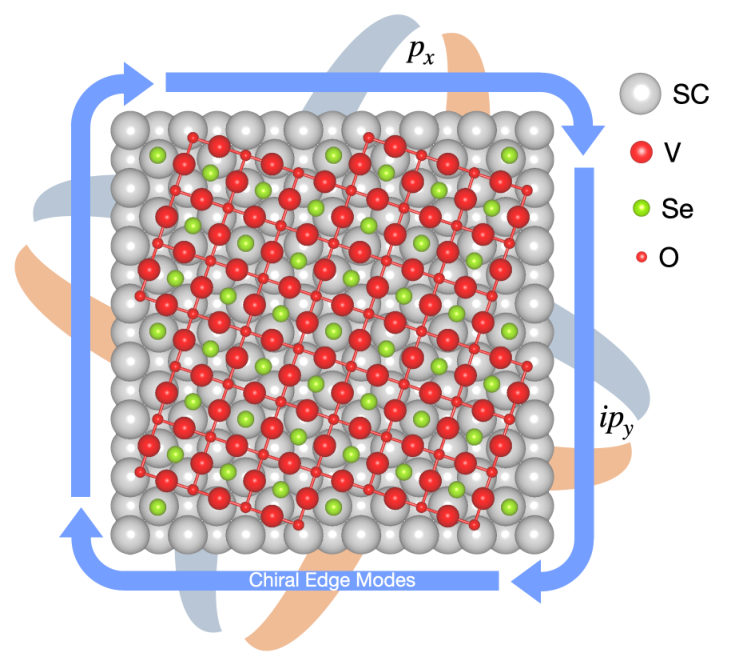
<figcaption class="paper-figure-caption"><b>Fig 1.</b> Fig. 1: (a) Schematic of the proposed altermagnet–superconductor heterostructure: mono- layer V2Se2O on top of a conventional s-wave supercondutor (gray). V2Se2O is slightly hole doped, resulting in a FS of disconnected, spin-polarized hole pockets (see Fig. 2). Through the proximity effect, fully gapped topological superconductivity is induced in the bulk of the heterostructure with chiral Majorana edge modes on the boundary.</figcaption>
</figure>
<figure class="paper-figure-card">
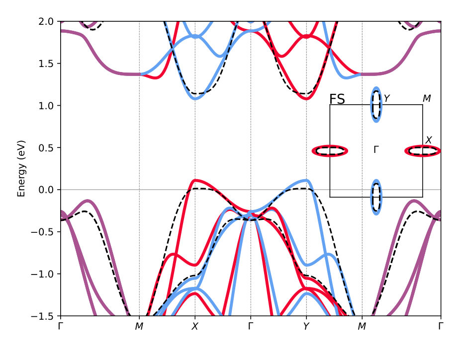
<figcaption class="paper-figure-caption"><b>Fig 2.</b> Fig. 2: Ab-initio band structure of hole-doped monolayer V2Se2O with Néel-ordered V moments of ±1.7µB. Along the diagonals of the square Brillouin zone the bands are spin degenerate (purple). Away from the md mirror line, the bands are non-degenerate and spin-polarized (red/blue). The dashed line shows the spectrum of the fitted effective four-band model hM(k). The inset shows the FS obtained from ab initio (solid) and from the effective model (dashed lines). The pockets are fully spin polarized and there is no spin degeneracy on the FS, quenching conventional, zero-momentum singlet pairing.</figcaption>
</figure>
<figure class="paper-figure-card">
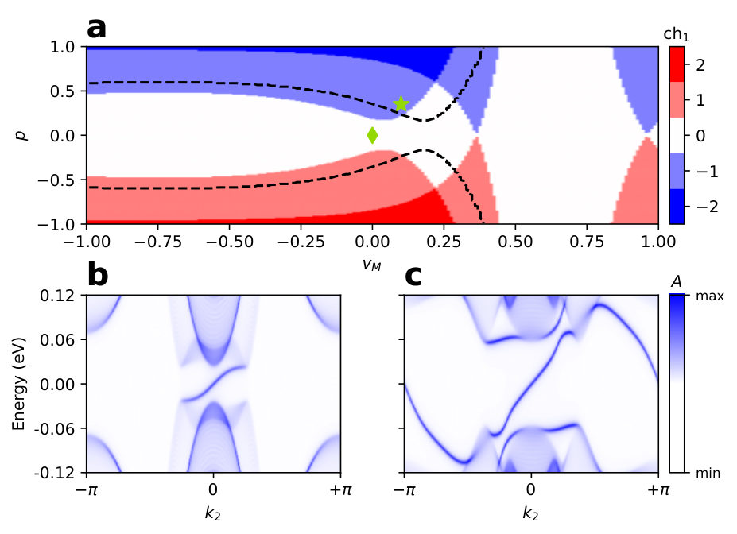
<figcaption class="paper-figure-caption"><b>Fig 3.</b> Fig. 3: (a) Topological phase diagram of the altermagnet–superconductor heterostruc- ture hht(k) as a function of the spin-polarization of the interface tunneling p and the hybridization vM for ∆0 = 0.2, λR = 0.2, γ = 0.9 on a 51 × 51 k-point mesh. The star and diamond mark the parameter tuple used in (b) and (c), respectively. The dashed lines show the phase boundary between ch1 = 0 and ch1 = ±1 when the spin splitting is reduced from η = 1 to η = 0.5. There is no region with ch1 = ±2 for η = 0.5. (b) Boundary spectral weight A(ω, k2) of the five outermost layers in a 100 layer slab along a1 at vM = 0.1 and p = 0.35 (green star) with ch1 = −1 and periodic boundary conditions in the a2...</figcaption>
</figure>
<figure class="paper-figure-card">
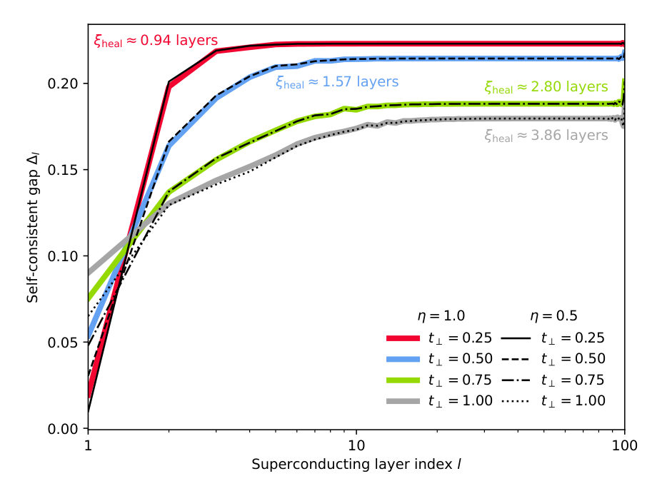
<figcaption class="paper-figure-caption"><b>Fig 4.</b> Fig. 4: Self-consistent layer-resolved singlet gap ∆l across a stack of N = 100 super- conducting layers for λR = 0.2, γ = 0.9, vM = 0.1 and p = 0.35 for different values of interlayer hopping t⊥. Solid lines show the gap profiles for η = 1.0 and µM = −0.73, while dashed lines correspond to η = 0.5 and µM = −0.82. The suppression near l = 1, the layer adjacent to the magnetic interface, and its recovery toward the bulk value illustrate the IPE. Exponential fits to the recovery tails from l = 2 into the bulk yield healing lengths from approximately one to about four superconducting layers.</figcaption>
</figure>
</div>
<p><strong>Summary.</strong> This theoretical work proposes using an altermagnetic semiconductor interfaced with an $s$-wave superconductor to create a topological triplet superconductor. By modeling the system with a BdG Hamiltonian, the authors predict the emergence of chiral Majorana edge modes, offering a practical pathway for superconducting quantum devices.</p>
<p><strong>Why it may be interesting.</strong> The work provides a concrete, material-based mechanism for generating topological superconductivity using magnetism, which is highly relevant for realizing fault-tolerant quantum computation components.</p>
<details>
<summary>Detailed structure</summary>
<p><strong>Main problem.</strong> The paper aims to establish a practical theoretical route to realizing topological triplet superconductivity by engineering an interface between a conventional $s$-wave superconductor and an altermagnetic semiconductor.</p>
<p><strong>Main result.</strong> The altermagnetic proximity effect converts the induced pairing into a fully gapped $p$-wave state, resulting in Bogoliubov-de Gennes bands with a non-zero Chern number and observable chiral Majorana edge modes.</p>
<p><strong>Method.</strong> The study employs ab-initio calculations to model the band structure of the altermagnet and uses self-consistent Bogoliubov-de Gennes (BdG) calculations to analyze the superconducting instability across the heterostructure.</p>
<p><strong>Model / system.</strong> The system is a heterostructure comprising an altermagnetic monolayer ($    ext{V}_2    ext{Se}_2   ext{O}$) interfaced with an $s$-wave superconductor. The physics is modeled using an effective BdG Hamiltonian incorporating spin-splitting from the altermagnet and superconducting pairing terms.</p>
<p><strong>Key observables.</strong> Chern number of the BdG bands, chiral Majorana edge modes, and the spatial evolution of the superconducting gap ($\Delta_l$) across the multilayer stack.</p>
<p><strong>Important parameters / regimes.</strong> The degree of altermagnetic exchange splitting ($\eta$), interface polarization ($p$), and the superconducting gap amplitude ($\Delta_0$).</p>
<p><strong>Assumptions / limitations.</strong> The analysis assumes the superconducting instability is dominated by low-energy states near the Fermi surface, and it explicitly models the inverse proximity effect (IPE).</p>
<p><strong>Figures summary.</strong> Figures schematically illustrate the proposed heterostructure and the resulting topological state with chiral Majorana edge modes. Other figures likely show band structures and gap profiles.</p>
<p><strong>Paper structure.</strong> The paper proceeds by first establishing the physical model using ab-initio results for the altermagnet, then constructing the full BdG Hamiltonian for the interface, and finally calculating key topological invariants and gap profiles to confirm the predicted superconducting state.</p>
</details>
<details>
<summary>Abstract</summary>
<p>Fully gapped spin-triplet superconductors offer a natural setting for topological edge transport and Majorana excitations. Here we propose a heterostructure that interfaces altermagnetic monolayer V$_2$Se$_2$O with a conventional $s$-wave superconductor. Starting from an ab-initio description of V$_2$Se$_2$O, we construct a low-energy model of its spin-split Fermi surface and study the superconducting instability of the coupled stack. We find that the momentum-dependent exchange splitting of the altermagnet strongly favors equal-spin pairing and converts the proximity-induced order into a fully gapped $p$-wave state. Over a broad range of interface parameters, the resulting Bogoliubov-de Gennes bands carry a nonzero Chern number, and slab spectra exhibit chiral Majorana edge modes traversing the bulk gap. We further quantify the inverse proximity effect and show how the induced gap evolves across a finite multilayer stack. These results establish a route to topological triplet superconductivity by interfacing a conventional superconductor with an experimentally available altermagnetic semiconductor, and provide practical guidance for interface fabrication and experimental detection.</p>
</details>
<p><sub><a href="#top">↑ back to top</a></sub></p>

<p><a id="paper-2609.14110"></a></p>
<h3 id="torsion-detection-in-clique-complexes-is-conditionally-math1871math-hard"><a href="http://arxiv.org/abs/2609.14110v1">Torsion detection in clique complexes is conditionally $QMA_1$-hard</a></h3>
<p><strong>Authors:</strong> Adam Wesołowski<br>
<strong>Type:</strong> theory · <strong>Category:</strong> other · <strong>PDF:</strong> <a href="https://arxiv.org/pdf/2609.14110v1">https://arxiv.org/pdf/2609.14110v1</a><br>
<strong>Analysis basis:</strong> full PDF text, analyzed in chunks</p>
<div class="figure-strip-hint">↔ Scroll figures horizontally</div>
<div class="paper-figures-scroll">
<figure class="paper-figure-card">
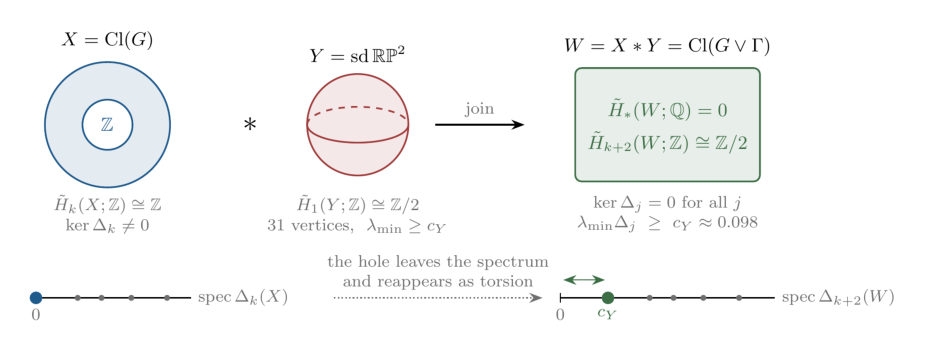
<figcaption class="paper-figure-caption"><b>Fig 1.</b> Figure 1: Overview. Joining the input with a fixed projective plane removes all rational homol- ogy, gaps every Laplacian, and re-encodes the kth mod-2 Betti number as 2-torsion in degree k + 2.</figcaption>
</figure>
</div>
<p><strong>Summary.</strong> This paper establishes the computational hardness of detecting torsion in the homology of clique complexes, a structure derived from graphs. By using a specific algebraic gadget, the authors reduce the problem to detecting 2-torsion in a complex whose Laplacian is guaranteed to have a spectral gap. This proves the problem is NP-hard and QMA_1-hard, highlighting the unique information captured by integral homology beyond what is accessible via spectral methods.</p>
<p><strong>Why it may be interesting.</strong> While the topic is purely in algebraic topology and quantum complexity theory, the use of spectral properties (Laplacian, spectral gap) to characterize computational hardness is relevant to understanding the limits of quantum algorithms in analyzing complex physical structures.</p>
<details>
<summary>Detailed structure</summary>
<p><strong>Main problem.</strong> The paper determines the computational hardness of detecting torsion in the integral homology of clique complexes, which captures topological information inaccessible to standard spectral methods.</p>
<p><strong>Main result.</strong> Detecting torsion in clique complexes of unweighted graphs is shown to be NP-hard, and it is QMA_1-hard under certain conditions related to mod-2 clique homology.</p>
<p><strong>Method.</strong> The authors construct a reduction by joining the input complex with a fixed gadget (triangulation of the projective plane) to encode the problem into the detection of 2-torsion in the resulting complex's homology.</p>
<p><strong>Model / system.</strong> The model is the clique complex of a graph, analyzed using algebraic topology (homology theory) and spectral graph theory (Laplacian operators). The core mathematical tool is the join operation on simplicial complexes.</p>
<p><strong>Key observables.</strong> Betti numbers ($eta_k$), integral homology groups ($  ext{e}H_k$), and the presence/absence of 2-torsion in the homology groups.</p>
<p><strong>Important parameters / regimes.</strong> The spectral gap constant ($c_Y$) imposed by the gadget, and the degree of the homology group ($k$).</p>
<p><strong>Assumptions / limitations.</strong> The QMA_1-hardness result is conditional on the 2-torsion-freeness of the 'NO' instances of the original clique homology problem.</p>
<p><strong>Figures summary.</strong> Figure 1 summarizes the reduction: joining the input with the projective plane removes rational homology, gaps every Laplacian, and re-encodes the $k$-th mod-2 Betti number as 2-torsion in degree $k+2$.</p>
<p><strong>Paper structure.</strong> The paper develops the hardness proof by first establishing the algebraic machinery (Künneth formula, spectral gap via the join operation) and then constructing a specific reduction from the known hard problem of clique homology to the gapped torsion detection problem.</p>
</details>
<details>
<summary>Abstract</summary>
<p>Quantum algorithms for topological data analysis compute Betti numbers, the ranks of the homology groups of a simplicial complex, which can be read off from the kernel of a combinatorial Laplacian. Deciding whether a Betti number of a clique complex is nonzero is $QMA_1$-hard, and remains so under a spectral gap promise on vertex-weighted graphs. Integral homology, however, contains information inaccessible to the Laplacian spectrum. A new part that appears in integral homology is torsion: cycles that become boundaries only after being traversed several times, as in a projective plane or a Klein bottle. We ask how hard it is to detect torsion, and we answer with a simple reduction. We attach to an arbitrary clique complex a fixed $31$-vertex triangulation of the projective plane. The $k$th mod-$2$ Betti number of the input then reappears as $2$-torsion two degrees up, while all rational homology disappears and every combinatorial Laplacian acquires a constant spectral gap. We conclude that detecting torsion in clique complexes of unweighted graphs is $NP$-hard, even under a constant gap promise, and that it is $QMA_1$-hard if mod-$2$ clique homology is.</p>
</details>
<p><sub><a href="#top">↑ back to top</a></sub></p>

<p><a id="paper-2609.13839"></a></p>
<h3 id="what-output-equivalence-oracles-miss-an-empirical-study-of-equivalence-invisible-bug-fixes-in-quantum-transpilers-qiskit-tket-cirq"><a href="http://arxiv.org/abs/2609.13839v1">What Output-Equivalence Oracles Miss: An Empirical Study of Equivalence-Invisible Bug Fixes in Quantum Transpilers (Qiskit, tket, Cirq)</a></h3>
<p><strong>Authors:</strong> Furqan Nasir, Arif Shah, Iftikhar Alam<br>
<strong>Type:</strong> experiment · <strong>Category:</strong> quantum information and computing · <strong>PDF:</strong> <a href="https://arxiv.org/pdf/2609.13839v1">https://arxiv.org/pdf/2609.13839v1</a><br>
<strong>Analysis basis:</strong> full PDF text, analyzed in chunks</p>
<div class="figure-strip-hint">↔ Scroll figures horizontally</div>
<div class="paper-figures-scroll">
<figure class="paper-figure-card">
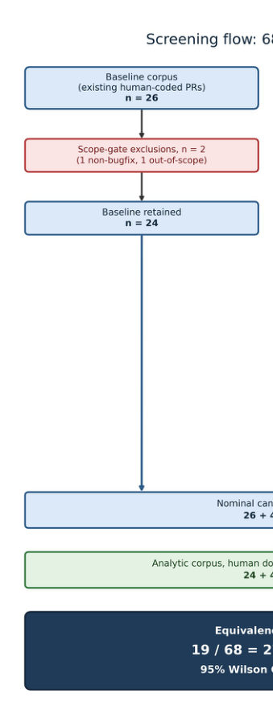
<figcaption class="paper-figure-caption"><b>Fig 1.</b> Figure 1. Screening flow from the nominal 70-candidate corpus to the 68-fix analytic corpus, with exact stage counts and exclusion reasons. Source data: data/mining_validation/screening_log_70.csv, candidate_queue_70.csv, included_candidate_audit_70.csv, labels_final_68.csv.</figcaption>
</figure>
<figure class="paper-figure-card">
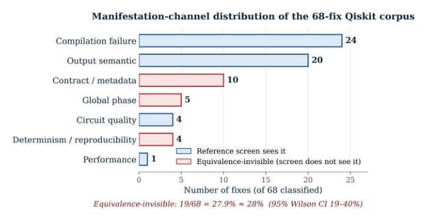
<figcaption class="paper-figure-caption"><b>Fig 2.</b> Figure 2. Manifestation-channel distribution of the 68-fix Qiskit corpus (Table 3), coloured by reference-screen visibility. Source data: data/mining_validation/labels_final_68.csv.</figcaption>
</figure>
<figure class="paper-figure-card">
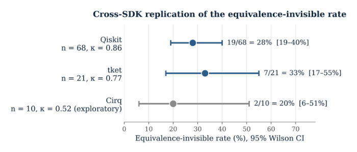
<figcaption class="paper-figure-caption"><b>Fig 3.</b> Figure 3. Cross-SDK replication of the equivalence-invisible rate (Table 4), with 95% Wilson confidence intervals. Qiskit and tket (navy) are replication evidence; Cirq (grey) is an exploratory consistency check.</figcaption>
</figure>
<figure class="paper-figure-card">
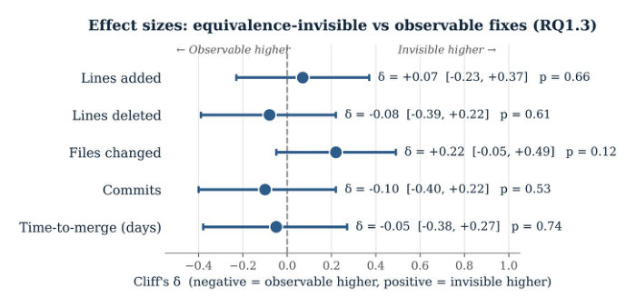
<figcaption class="paper-figure-caption"><b>Fig 4.</b> Figure 4. Effect sizes (Cliff&#x27;s δ) and bootstrap 95% confidence intervals for the five RQ1.3 surface-characteristic comparisons in Table 5. All intervals bracket zero.</figcaption>
</figure>
</div>
<p><strong>Summary.</strong> This paper empirically demonstrates that relying solely on output-equivalence to validate quantum compilers is insufficient, as a measurable fraction of real bugs reside in metadata (like layout or phase) that do not alter the final computed unitary. The authors quantify this gap across major quantum SDKs, arguing that validation must move beyond simple output checking to include internal contract assertions.</p>
<p><strong>Why it may be interesting.</strong> While the focus is on software tools, the underlying concept of validating complex physical transformations (like quantum state evolution) against multiple, potentially conflicting, internal representations is relevant to understanding robustness in quantum simulation algorithms.</p>
<details>
<summary>Detailed structure</summary>
<p><strong>Main problem.</strong> Standard quantum compiler correctness checks rely only on output-equivalence, which fails to detect bugs in auxiliary metadata like circuit layout, permutation records, or global phase.</p>
<p><strong>Main result.</strong> A significant fraction (up to 28%) of real transpiler bug-fixes repair faults that are invisible to the standard output-equivalence oracle, even when augmented with other checks.</p>
<p><strong>Method.</strong> The authors conducted an empirical study by analyzing a corpus of real bug-fixes across multiple quantum SDKs (Qiskit, tket, Cirq) and classifying the failure modes.</p>
<p><strong>Model / system.</strong> The system under study is the quantum transpiler process, which converts high-level quantum circuits into hardware-specific gate sequences. The analysis focuses on the comparison between the intended unitary operation and the compiled output.</p>
<p><strong>Key observables.</strong> The primary observable is the failure rate of the output-equivalence oracle to detect known bugs, with specific focus on corrupted contract or permutation metadata.</p>
<p><strong>Important parameters / regimes.</strong> The measured rates (e.g., 19/68 fixes, 28%) and the comparison across different compiler backends (Qiskit, tket, Cirq).</p>
<p><strong>Assumptions / limitations.</strong> The study assumes that the output-equivalence oracle is the standard benchmark for correctness, and it is limited by the specific, finite corpus of observed bug-fixes.</p>
<p><strong>Figures summary.</strong> The notes reference Table 1, which details a fault-manifestation taxonomy classifying various fault types (e.g., output_semantic, transpiler_contract_or_metadata) and whether the augmented oracle can detect them.</p>
<p><strong>Paper structure.</strong> The paper establishes the limitations of the output-equivalence oracle, presents the empirical measurement of invisible bugs using a taxonomy, quantifies the failure rate across multiple compilers, and concludes by suggesting the need for contract-level validation.</p>
</details>
<details>
<summary>Abstract</summary>
<p>Quantum compilers are judged correct by an output-equivalence oracle: the compiled circuit must compute the same unitary as the original, modulo global phase and a qubit-layout permutation. This oracle, by construction, checks only that semantic map, not the circuit's own layout, permutation, or phase records: a defect there, or in a fixed-seed run's determinism, can pass unseen though the record is public. We measure how often this happens in real merged compiler fixes: a systematically identified corpus of Qiskit transpiler bug-fixes, classified by an independently dual-coded, source-validated manifestation taxonomy. Nineteen of 68 fixes (28%, 95% Wilson CI 19-40%) repair faults that this equivalence screen does not catch, even one augmented with compilation-validity, circuit-quality, and performance checks. A secondary wider-window robustness sample produced a nearly identical fraction (29/104, 27.9%, CI 20-37%). A conservative floor remains even restricted to the one unconditionally equivalence-invisible channel (a corrupted layout or permutation record): 10 of 68 fixes (15%, CI 8-25%) beneath the 28% headline. The gap is not Qiskit-specific: it replicates in tket (7 of 21, 33%), with Cirq smaller but consistent. We detected no systematic differences on five inexpensive PR-level characteristics (19 vs 49, underpowered to rule out a modest true difference). This class dominates the invisible set, concentrating at representation-boundary crossings. We release the corpus, codebook, and coding artifacts. Here we only measure it.</p>
</details>
<p><sub><a href="#top">↑ back to top</a></sub></p>

<p><a id="paper-2609.14594"></a></p>
<h3 id="when-is-global-evolutionary-search-useful-for-variational-quantum-algorithms-a-landscape-first-study"><a href="http://arxiv.org/abs/2609.14594v1">When is global evolutionary search useful for variational quantum algorithms? A landscape-first study</a></h3>
<p><strong>Authors:</strong> Vojtěch Novák, Ivan Zelinka<br>
<strong>Type:</strong> theory · <strong>Category:</strong> disordered systems and neural networks · <strong>PDF:</strong> <a href="https://arxiv.org/pdf/2609.14594v1">https://arxiv.org/pdf/2609.14594v1</a><br>
<strong>Analysis basis:</strong> full PDF text, analyzed in chunks</p>
<div class="figure-strip-hint">↔ Scroll figures horizontally</div>
<div class="paper-figures-scroll">
<figure class="paper-figure-card">
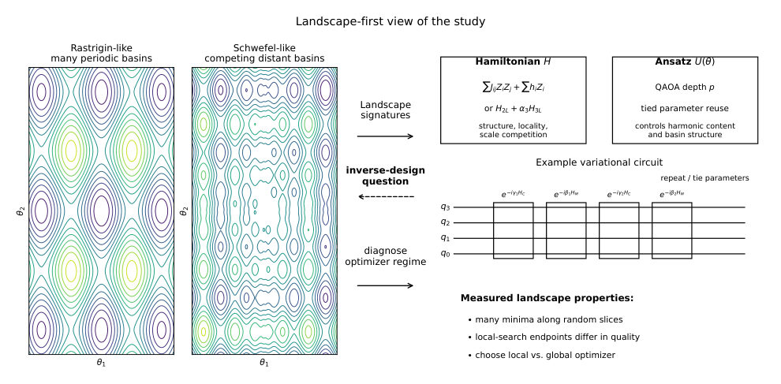
<figcaption class="paper-figure-caption"><b>Fig 1.</b> FIG. 1. Conceptual view of the landscape-first question. Classical multimodal functions provide familiar examples of landscapes with many competing basins. In a VQA, the objective landscape is instead induced jointly by the Hamiltonian H and parameterized circuit U(θ). We vary these ingredients in controlled ways, measure the resulting basin structure and one- dimensional slice complexity, and ask whether those measurements indicate when multistart local search is sufficient or when sustained global evolutionary search is useful. The drawing is schematic; the classical contours are illustrative reference functions rather than data from the quantum experiments.</figcaption>
</figure>
<figure class="paper-figure-card">
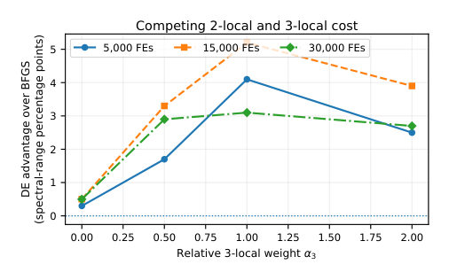
<figcaption class="paper-figure-caption"><b>Fig 2.</b> FIG. 3. Controlled mixed-locality experiment. The largest early global-search advantage occurs when 2-local and 3-local structures have comparable coefficient-norm scale. The vertical axis gives the adaptive-DE improvement over MS-BFGS in spectral-range percentage points.</figcaption>
</figure>
<figure class="paper-figure-card">
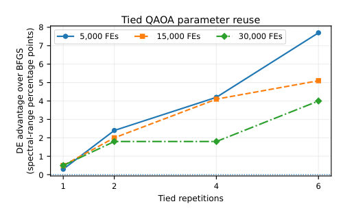
<figcaption class="paper-figure-caption"><b>Fig 3.</b> FIG. 2. Controlled tied-reuse experiment. Repeating each of the three QAOA cost–mixer layers while tying its angle pair progressively increases the finite-budget advantage of adaptive DE over multistart BFGS. The vertical axis is expressed in spectral-range percentage points; e.g., 4 means a normalized- error difference of 0.04, while negative values indicate the opposite sign of advantage.</figcaption>
</figure>
<figure class="paper-figure-card">
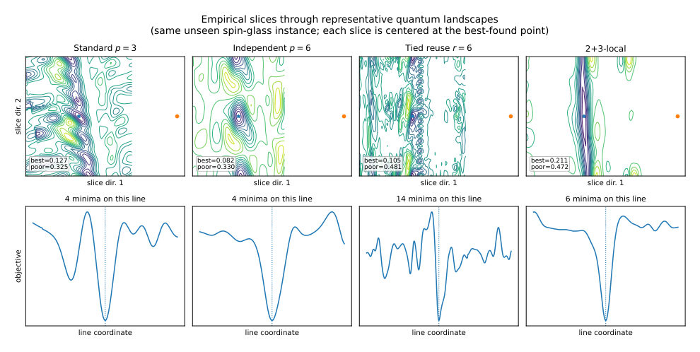
<figcaption class="paper-figure-caption"><b>Fig 4.</b> FIG. 4. Empirical slices through four exact quantum objectives built on the same unseen N = 10 spin-glass backbone. Top: contour plots of two-dimensional slices centered at the best-found point; the star marks that best point and the circle marks a poorer local-search endpoint used to define the principal slice direction. Bottom: the corresponding one-dimensional slices along that direction. Standard p = 3 shows only a few wells along the displayed line. Independent p = 6 increases oscillatory structure but does not create equally severe basin separation. Tied reuse r = 6 produces a much more Rastrigin-like line slice with many repeated minima, whereas the mixed-locality construction...</figcaption>
</figure>
<figure class="paper-figure-card">
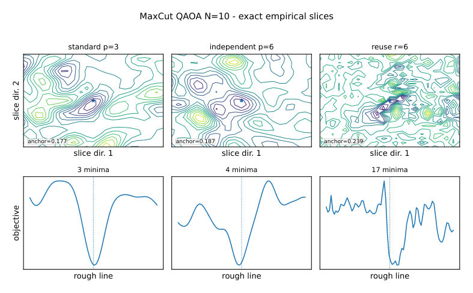
<figcaption class="paper-figure-caption"><b>Fig 5.</b> FIG. 5. High-corrugation empirical scan for a standard N = 10 MaxCut QAOA instance. Among six random directions through a low-energy anchor, the line with the most local minima is shown together with an orthogonal two-dimensional slice. Standard p = 3 and independent p = 6 retain only a few wells, whereas tied reuse r = 6 produces a dense repeated-well structure.</figcaption>
</figure>
</div>
<p><strong>Summary.</strong> This paper investigates when global search algorithms are superior to local search for optimizing Variational Quantum Algorithms (VQAs). By analyzing the geometry of the optimization landscape using a 'landscape-first' approach, the authors demonstrate that specific physical mechanisms, like parameter reuse, can trap local optimizers. The findings provide a diagnostic tool to predict the necessity of computationally expensive global search methods in quantum computation.</p>
<p><strong>Why it may be interesting.</strong> It provides a rigorous, theory-driven framework for understanding the limitations of classical optimization techniques when applied to quantum hardware simulations, guiding the development of robust VQA implementations.</p>
<details>
<summary>Detailed structure</summary>
<p><strong>Main problem.</strong> The paper addresses the fundamental question of determining when computationally expensive global evolutionary search methods are necessary and beneficial for Variational Quantum Algorithms (VQAs) compared to standard local optimization techniques.</p>
<p><strong>Main result.</strong> Global search methods, specifically adaptive Differential Evolution (DE), outperform local search on certain challenging quantum objectives, particularly those exhibiting parameter reuse effects, suggesting that landscape structure, rather than just circuit depth, dictates optimization difficulty.</p>
<p><strong>Method.</strong> The study employs a 'landscape-first' design, comparing multiple optimizers (local vs. global) across controlled quantum models and unseen spin-glass instances to diagnose the underlying geometry of the optimization landscape.</p>
<p><strong>Model / system.</strong> The work focuses on VQAs, utilizing models like QAOA, VQE for spin glasses, MaxCut, and TFIM. The optimization landscape is defined by the objective function derived from the Hamiltonian and the parameterized quantum circuit.</p>
<p><strong>Key observables.</strong> Normalized physical error ($\epsilon_{	ext{phys}}$), basin structure, one-dimensional slice complexity, and performance metrics comparing global vs. local search convergence.</p>
<p><strong>Important parameters / regimes.</strong> QAOA depth ($p$), parameter reuse factors ($r$), and the specific structure of the Hamiltonian ($H$).</p>
<p><strong>Assumptions / limitations.</strong> The utility of global search is assessed by comparing performance across controlled, unseen quantum objectives, and the analysis assumes the ability to probe landscape features systematically.</p>
<p><strong>Figures summary.</strong> Conceptual figures illustrate the landscape-first approach by varying Hamiltonian and circuit parameters to diagnose optimization regimes; tables summarize quantitative comparisons of various optimizers across multiple quantum models.</p>
<p><strong>Paper structure.</strong> The paper follows a three-phase structure: Phase I (Exploratory) to identify failure mechanisms, Phase II (Controlled Confirmation) to test these mechanisms on specific models, and Phase III (Validation) to use a pre-benchmark landscape score to predict performance on entirely new quantum objectives.</p>
</details>
<details>
<summary>Abstract</summary>
<p>Variational quantum algorithms recast state preparation as classical nonconvex optimization, but it is often unclear when multistart local search suffices and when population-based global search justifies its evaluation cost. Using a landscape-first design, controlled QAOA experiments identify two mechanisms making local search unreliable: parameter reuse across circuit layers and competition between 2-local and 3-local cost terms. Increasing QAOA depth alone does not replicate this effect. We test these mechanisms across eight unseen spin glasses, fresh $N=10$ and $N=12$ instances, and standard MaxCut, transverse-field Ising, and Heisenberg models. On all eight unseen spin glasses, adaptive differential evolution (DE) achieves lower median error than both multistart BFGS and multistart Powell on the two difficult constructions, whereas the independent-depth control does not. The parameter-reuse effect transfers to MaxCut at both sizes, while standard VQE models remain favorable to local search. A pre-benchmark landscape score combining random-start local outcomes and 1D parameter slices is fixed from confirmation data before evaluating new optimizers. It predicts whether adaptive DE outperforms multistart BFGS by over one spectral-range percentage point on 50 new quantum objectives with 80--86% condition-level accuracy. The clearest indicator of global-search utility is that local search frequently traps in inferior basins, rather than circuit depth or curvature anisotropy. The findings motivate whether quantum circuit complexity can be traded for harder classical optimization when robust global search is available.</p>
</details>
<p><sub><a href="#top">↑ back to top</a></sub></p>
</details>
<h2 id="secondary-cond-mat-archives">Secondary cond-mat archives</h2>
<p><em>Papers from cond-mat.mtrl-sci, mes-hall, other, soft, supr-con. These archives are de-prioritized — they appear at the end regardless of relevance score.</em></p>
<h3 id="relevant-in-secondary-archives-33">Relevant in secondary archives (33)</h3>

<p><a id="paper-2609.13380"></a></p>
<h3 id="strain-induced-helical-superconductivity-and-the-zero-field-diode-effect">⭐ <a href="http://arxiv.org/abs/2609.13380v1">Strain-Induced Helical Superconductivity and the Zero-Field Diode Effect</a></h3>
<p><strong>Highlighted author(s):</strong> Jörg Schmalian<br>
<strong>Authors:</strong> Raigo Nagashima, Jörg Schmalian<br>
<strong>Type:</strong> theory · <strong>Category:</strong> other · <strong>PDF:</strong> <a href="https://arxiv.org/pdf/2609.13380v1">https://arxiv.org/pdf/2609.13380v1</a><br>
<strong>Analysis basis:</strong> full PDF text, analyzed in chunks</p>
<div class="figure-strip-hint">↔ Scroll figures horizontally</div>
<div class="paper-figures-scroll">
<figure class="paper-figure-card">
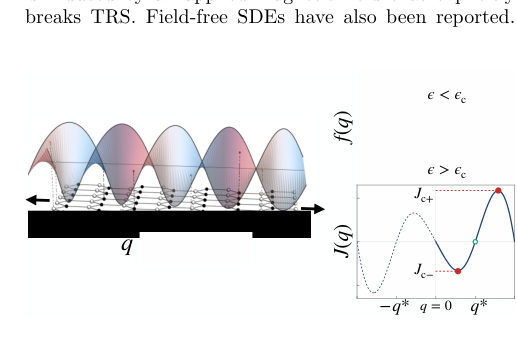
<figcaption class="paper-figure-caption"><b>Fig 1.</b> FIG. 1. (Left) Schematic of a strain-induced spontaneous he- lical state. The color gradient represents the spatially vary- ing phase of the superconducting order parameter. (Right) Schematic free energy f(q) (top) and corresponding current density J(q) (bottom). When the strain ϵ exceeds the critical value ϵc, the system transitions to a helical state with finite momentum q∗. The superconducting diode effect is quanti- fied by the difference between the magnitudes of the positive and negative critical currents, Jc+ and Jc−, respectively.</figcaption>
</figure>
<figure class="paper-figure-card">
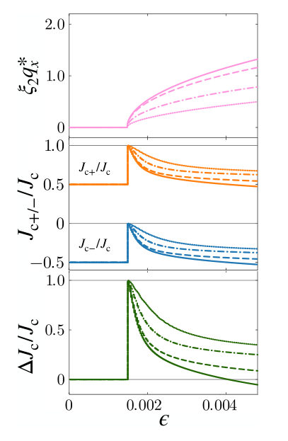
<figcaption class="paper-figure-caption"><b>Fig 2.</b> FIG. 2. The strain dependence of ξ2q∗ x (above), normal- ized critical currents Jc+/−/Jc (middle), and the normal- ized zero-field SDE (diode efficiency) ∆Jc/Jc (below) with Jc := |Jc+| + |Jc−|. We fix ξ1/ξ2 = 5.48, λ/η = 0.001 × ξ2, µ/η = 3.73 × ξ2 and λ2/(c2|a1|) = 1, and show results for dif- ferent d/(c2 1ξ2 1): 0.00055 (solid), 0.0055 (dashed), 0.055 (dash- dotted), and 0.277 (dotted).</figcaption>
</figure>
<figure class="paper-figure-card">
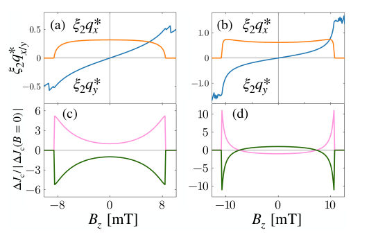
<figcaption class="paper-figure-caption"><b>Fig 3.</b> FIG. 3. (a) and (b): The Bz-dependence of ξ2q∗ x (orange) and ξ2q∗ y (blue). (c) and (d): The SDE along the x-axis as a function of Bz normalized by the absolute value at B = 0, where the pink (green) curve shows the SDE for TRSB with positive +q∗ x (negative −q∗ x) state. In panel (a) and (c) [(b) and (d)] we chose ξ1/ξ2 = 7.07 [3.16], λ/η = 0.0019 [0.00083]× ξ2, µ/η = 3.73 [1.67] × ξ2, and ξ2 1λ2/ (c2c1) = 1 and introduce the characteristic field B0 = p</figcaption>
</figure>
</div>

<p><strong>Summary.</strong> This theoretical work establishes that mechanical strain can induce a zero-field superconducting diode effect by driving the system into a helical superconducting state. Using a Ginzburg-Landau approach, the authors show that strain mixes s-wave pairing with higher-order channels, leading to spontaneous time-reversal symmetry breaking and a measurable diode response. This provides a strain-tunable method for controlling superconducting transport properties.</p>
<p><strong>Why it may be interesting.</strong> The mechanism relies on symmetry breaking induced by strain to generate non-reciprocal transport, which is a key concept in topological superconductivity and superconducting electronics, linking structural mechanics to quantum transport.</p>
<details>
<summary>Detailed structure</summary>
<p><strong>Main problem.</strong> The paper addresses the mechanism behind the zero-field superconducting diode effect (SDE) induced purely by mechanical strain, without requiring external magnetic fields or magnetism.</p>
<p><strong>Main result.</strong> Uniaxial strain drives a superconducting transition into a helical state characterized by spontaneous time-reversal symmetry breaking and a finite Cooper-pair momentum, which generates the measurable diode effect.</p>
<p><strong>Method.</strong> The analysis employs a symmetry-based Ginzburg-Landau free energy expansion, modeling the superconducting order parameter using multiple components.</p>
<p><strong>Model / system.</strong> The system is modeled using a Ginzburg-Landau theory for superconductors, specifically investigating materials like PbTaSe2. The theory incorporates strain ($\epsilon$) effects and symmetry-allowed Lifshitz coupling terms acting on two superconducting order parameters.</p>
<p><strong>Key observables.</strong> Non-reciprocal critical current (SDE), spontaneous Cooper-pair momentum ($q^*$), and the strain dependence of the critical temperature ($T_c(\epsilon)$).</p>
<p><strong>Important parameters / regimes.</strong> Uniaxial strain ($\epsilon$), the ratio $\gamma(\ell^2 - \xi_2^2)/\xi_2^1$, and the field-free SDE efficiency ($\Delta J_c/J_c$).</p>
<p><strong>Assumptions / limitations.</strong> The calculated critical currents are treated as intrinsic depairing currents, ignoring dissipation from vortex motion, and assuming the current does not alter the spontaneous symmetry breaking.</p>
<p><strong>Figures summary.</strong> Figures illustrate the schematic of the helical state, the free energy dependence on momentum ($f(q)$), and the strain dependence of the normalized critical currents and the SDE.</p>
<p><strong>Paper structure.</strong> The paper builds the theory by first establishing the Ginzburg-Landau framework incorporating strain and Lifshitz coupling. It then analyzes the transition to the helical state, derives the momentum $q^*$, and finally predicts the strain-dependent, non-monotonic behavior of the zero-field SDE.</p>
</details>
<details>
<summary>Abstract</summary>
<p>Motivated by the strain-induced zero-field superconducting diode effect observed in PbTaSe$_2$, we identify a mechanism by which strain generates nonreciprocal superconducting transport without magnetism or an external magnetic field. Uniaxial strain mixes a dominant $s$-wave order parameter with a subdominant two-component pairing channel and enhances their symmetry-allowed Lifshitz coupling. Beyond a critical strain, this coupling drives a transition into a helical state with spontaneously selected finite Cooper-pair momentum and broken time-reversal symmetry. The resulting diode effect is generically non-monotonic in strain and exhibits distinct responses for currents parallel and perpendicular to the residual mirror plane, consistent with experiment. Our theory predicts that reversing the principal strain switches the diode direction by $90^\circ$, while shear strain rotates it continuously. These results establish strain as a symmetry-selective means of creating, controlling, and diagnosing spontaneous helical superconductivity.</p>
</details>
<p><sub><a href="#top">↑ back to top</a></sub></p>

<p><a id="paper-2609.15866"></a></p>
<h3 id="updown-conversion-of-infrared-light-by-few-layer-graphene-polytypes"><a href="http://arxiv.org/abs/2609.15866v1">Up/down-conversion of infrared light by few-layer graphene polytypes</a></h3>
<p><strong>Authors:</strong> Patrick Johansen Sarsfield, Takaaki V. Joya, Takuto Kawakami, Mikito Koshino, Vladimir Falko<br>
<strong>Type:</strong> theory · <strong>Category:</strong> other · <strong>PDF:</strong> <a href="https://arxiv.org/pdf/2609.15866v1">https://arxiv.org/pdf/2609.15866v1</a><br>
<strong>Analysis basis:</strong> full PDF text, analyzed in chunks
<strong>Topic relevance:</strong> 🔥 <code>Keldysh / 2PI / non-Gaussian methods</code> <strong>4/5</strong> · <code>interference shaping light</code> <strong>1/5</strong></p>
<div class="figure-strip-hint">↔ Scroll figures horizontally</div>
<div class="paper-figures-scroll">
<figure class="paper-figure-card">
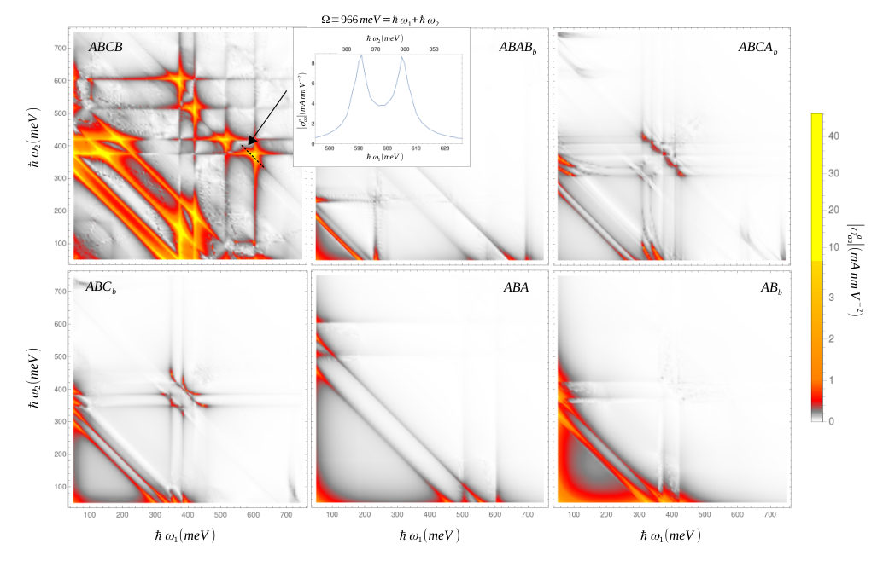
<figcaption class="paper-figure-caption"><b>Fig 1.</b> FIG. 1. The absolute value of second order conductivity for all stacking orders up to tetralayer. The inversion symmetric stacking orders have their symmetry broken by an on-layer proximity induced potential representing a substrate. The axis on each panel are the energies of the two lower energy photons respectively. For the inset we analise an exemplary resonance of ABCB graphene. Here we show how one may use the provided calculations to predict down conversion rates. For this example, the dashed line represents the Ω≡966meV= ℏω1 + ℏω2 line. The inset graph follows this line cut showing modulus of conductivity as a function of the two photon energies (on the upper and lower horizontal...</figcaption>
</figure>
<figure class="paper-figure-card">
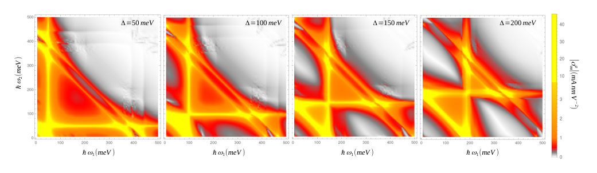
<figcaption class="paper-figure-caption"><b>Fig 2.</b> FIG. 2. The modulus of second order conductivity for bilayer graphene varying an externally induced symmetry breaking displacement field between the panels. The axis on each panel are the energies of the two lower energy photons respectively.</figcaption>
</figure>
<figure class="paper-figure-card">
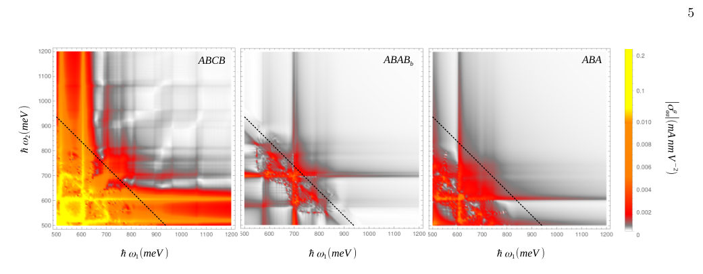
<figcaption class="paper-figure-caption"><b>Fig 3.</b> FIG. 3. The modulus of second order conductivity for relevant stacking orders up to tetralayer. In this case we show the computed conductivity maps at higher photon energies. The axis on each panel are the energies of the two lower energy photons. The dashed lines indicate energy combinations of the down converted photons which are near the telecoms frequency for optical fibers.</figcaption>
</figure>
</div>

<p><strong>Summary.</strong> This theoretical study predicts that few-layer graphene polytypes, particularly mixed stacking tetralayers, can efficiently mediate the up/down-conversion of infrared light. By calculating the second-order optical conductivity using advanced Green's function techniques, the authors pinpoint specific stacking orders and structural modifications that enhance this nonlinear process. This work suggests a pathway for creating correlated photon pairs in solid-state optical fibers.</p>
<p><strong>Why it may be interesting.</strong> This work directly addresses nonlinear quantum optics in solid-state materials, providing theoretical predictions for generating correlated photon pairs, which is highly relevant to quantum light sources and quantum information applications.</p>
<details>
<summary>Detailed structure</summary>
<p><strong>Main problem.</strong> The study investigates the up/down-conversion of infrared light using few-layer graphene polytypes, focusing on second-order nonlinear optical phenomena.</p>
<p><strong>Main result.</strong> Mixed stacking tetralayers (ABCB) are identified as highly efficient platforms for up/down-conversion in the infrared range, and asymmetrical encapsulation can promote nonlinearity in rhombohedral layers.</p>
<p><strong>Method.</strong> The authors used the Keldysh formalism for non-equilibrium Green’s functions to calculate the frequency-resolved second-order optical conductivity.</p>
<p><strong>Model / system.</strong> The system involves few-layer graphene films with various stacking orders (e.g., ABCB, rhombohedral). The theoretical framework includes an electron-photon interaction Hamiltonian leading to two-photon processes.</p>
<p><strong>Key observables.</strong> Second-order optical conductivity ($\sigma_{aa}$), efficiency of up/down-conversion, and polarization correlations of generated photon pairs.</p>
<p><strong>Important parameters / regimes.</strong> Photon energy ranges ($0.7 	ext{ eV} < \Omega < 1.1 	ext{ eV}$), stacking order (ABCB, rhombohedral), and external electric fields/encapsulation asymmetry.</p>
<p><strong>Assumptions / limitations.</strong> The analysis assumes the electronic structure is sensitive to the stacking sequence and that polarization correlations follow rules derived from $C_3$ symmetry.</p>
<p><strong>Figures summary.</strong> Figures show color maps of the second-order conductivity for various stacking orders, illustrating resonance behavior and specific line cuts demonstrating expected double resonance pairs.</p>
<p><strong>Paper structure.</strong> The paper progresses by deriving the necessary theoretical framework (Hamiltonian, Keldysh formalism), calculating the conductivity for different polytypes, and finally analyzing the resulting resonance maps and polarization selection rules.</p>
</details>
<details>
<summary>Abstract</summary>
<p>Optical nonlinearity of materials with broken inversion symmetry enables two-photon processes where an incoming pair of photons can generate an up-converted photon with the combined frequency, or a high-energy photon can be split into a correlated pair of down-converted photons. Here, we identify few-layer graphene films that offer up/down-conversion capability in the infrared spectral range. For mixed stacking tetralayers (ABCB), which are non-centrosymmetric 2D crystals, we find highly efficient nearly resonant up/down-conversion of [$ω_1,ω_2$] photon pairs into/from a photon with $0.7$eV$<Ω=ω_1+ω_2<1.1$eV. We also note that a pronounced second-order nonlinearity in the spectral range of $0.7$eV$<Ω<0.9$eV can be promoted in rhombohedral tri- and tetralayers by asymmetrical encapsulation. Potentially, for fibers coated with few-layer graphene, this opens the door for ``in fiber" production of photon pairs with correlated polarizations.</p>
</details>
<p><sub><a href="#top">↑ back to top</a></sub></p>

<p><a id="paper-2609.14241"></a></p>
<h3 id="the-effect-of-light-scattering-in-cavity-electrodynamics-fresnel-equations-with-decoherence"><a href="http://arxiv.org/abs/2609.14241v1">The effect of light scattering in cavity electrodynamics: Fresnel equations with decoherence</a></h3>
<p><strong>Authors:</strong> Natalya A. Zimbovskaya, Abraham Nitzan<br>
<strong>Type:</strong> theory · <strong>Category:</strong> other · <strong>PDF:</strong> <a href="https://arxiv.org/pdf/2609.14241v1">https://arxiv.org/pdf/2609.14241v1</a><br>
<strong>Analysis basis:</strong> full PDF text, analyzed in chunks
<strong>Topic relevance:</strong> <code>Tavis-Cummings &amp; cavity-many-emitter</code> <strong>3/5</strong> · <code>correlated / nonlocal dissipation</code> <strong>3/5</strong> · <code>driven-dissipative phase transition</code> <strong>3/5</strong> · <code>interference shaping light</code> <strong>3/5</strong> · <code>methods for driven-dissipative</code> <strong>3/5</strong> · <code>Keldysh / 2PI / non-Gaussian methods</code> <strong>2/5</strong> · <code>analog quantum simulation</code> <strong>2/5</strong> · <code>non-equilibrium universality</code> <strong>2/5</strong> · <code>quantum measurements</code> <strong>1/5</strong></p>
<div class="figure-strip-hint">↔ Scroll figures horizontally</div>
<div class="paper-figures-scroll">
<figure class="paper-figure-card">
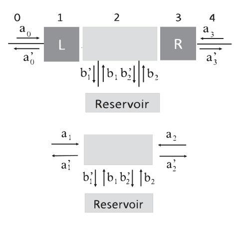
<figcaption class="paper-figure-caption"><b>Fig 1.</b> FIG. 1: Left: Schematic of the considered FP cavity together with the dephasing bath. Dark rectangles represent the mir- rors (segments 1 and 3 ) and the light one stands for the space in between (segment 2 ). Decoherence is introduced by additional processes, in which light is exchanged with a phase randomizing reservoir via two channels. Right: The cavity interior (that is the space between the mirrors) showing the coupling of the cavity system and the dephasing reservoir.</figcaption>
</figure>
<figure class="paper-figure-card">
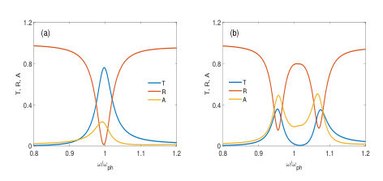
<figcaption class="paper-figure-caption"><b>Fig 2.</b> FIG. 2: Transmission ( T ), reflection ( R) and extinction (A) as functions of the light frequency ω in the coherent limit ( β = 0 )in the absence (a) and in the presence (b) of molecular medium in the cavity interior. The curves are plotted at ωp = 9 eV, ǫ∞= 9.2 , γ = 0.2 eV, d = 60 nm, L2 = 500 nm and the cavity mode frequency ωph = 1.09 eV. The refraction</figcaption>
</figure>
<figure class="paper-figure-card">

<figcaption class="paper-figure-caption"><b>Fig 3.</b> FIG. 3: The effect of decoherence on the light transmission, reflection and extinction spectra of a FP cavity in the absence (panels (a), (b), (c))) and in the presence (panels (d), (e), (f)) of molecules in the cavity interior. All parameters except β used here are taken the same as in Fig.2.</figcaption>
</figure>
<figure class="paper-figure-card">

<figcaption class="paper-figure-caption"><b>Fig 4.</b> FIG. 4: The effect of decoherence on the light extinction in the empty FP cavity (a) and the cavity filled with molecules (b). Dashed curves are plotted neglecting the absorption in the bounding mirrors and solid ones are plotted assuming that the mirrors absorb the light.</figcaption>
</figure>
<figure class="paper-figure-card">

<figcaption class="paper-figure-caption"><b>Fig 5.</b> FIG. 5: The effect of light-matter interaction strength on the light transmission in the presence of decoherence. The displayed curves are plotted at β2 = 0.1</figcaption>
</figure>
</div>

<p><strong>Summary.</strong> This theoretical study models the impact of light decoherence on the optical response of a Fabri-Perot microcavity filled with molecules. By adapting electron transport scattering formalisms, the authors show that scattering causes a gradual erosion of the cavity photon mode. This loss mechanism severely diminishes the observable spectral signatures of molecular polaritons.</p>
<p><strong>Why it may be interesting.</strong> This work provides a crucial theoretical extension to cavity QED by incorporating realistic decoherence mechanisms derived from condensed matter transport theory, which is vital for understanding practical quantum optical devices.</p>
<details>
<summary>Detailed structure</summary>
<p><strong>Main problem.</strong> The paper investigates how light decoherence, caused by scattering, affects the linear optical response of a Fabri-Perot (FP) microcavity containing a molecular ensemble.</p>
<p><strong>Main result.</strong> Decoherence significantly degrades the cavity's optical properties, causing the spectral signatures of molecular polaritons to fade away as scattering intensity increases.</p>
<p><strong>Method.</strong> The authors generalize the Fresnel equations by treating light scattering as a multichannel problem, adapting the Büttiker formalism used in electron transport theory.</p>
<p><strong>Model / system.</strong> The system is an FP microcavity with metallic mirrors and a molecular medium whose dielectric response is modeled by a Lorentz function. The analysis uses transfer and scattering matrices adapted for decoherence.</p>
<p><strong>Key observables.</strong> Transmission ($T$), Reflection ($R$), and Extinction ($A$) spectra, particularly the spectral features of molecular polaritons.</p>
<p><strong>Important parameters / regimes.</strong> The decoherence parameter ($eta$), the molecular coupling strength ($\Omega$), and the cavity loss rates ($\gamma$).</p>
<p><strong>Assumptions / limitations.</strong> The light propagation is assumed normal to the mirrors, and the decoherence process is modeled by assuming zero net flux exchange with the thermal reservoir.</p>
<p><strong>Figures summary.</strong> Figures illustrate the spectral changes in T, R, and A as a function of the decoherence parameter ($eta$), showing the fading of polariton peaks and the broadening of spectral features.</p>
<p><strong>Paper structure.</strong> The paper builds from the standard coherent case using transfer matrices, extends the formalism to include decoherence via an expanded scattering matrix, and then analyzes the resulting changes in the transmission and reflection spectra.</p>
</details>
<details>
<summary>Abstract</summary>
<p>We consider the effect of light decoherence in a Fabri-Perot (FP) microcavity. We show that, when present, it may significantly change its linear response to the incident light.The optical properties of the bounding mirrors are described using the classical electrodynamics, and the light scattering causing the phase breaking is treated as a multichannel scattering problem employing a model introduced by Büttiker to describe dephasing in electron transport. We show that the dephasing causes a gradual erosion of the cavity photon mode and thus impedes the formation of molecular polaritons.   Consequently, the polaritons signatures in the transmission and absorption optical spectra of the microcavity are fading away as the scattering intensifies.</p>
</details>
<p><sub><a href="#top">↑ back to top</a></sub></p>

<p><a id="paper-2609.13882"></a></p>
<h3 id="vortex-rivers-and-multiple-voltage-transitions-in-superconducting-mgbmath1917math-thin-films"><a href="http://arxiv.org/abs/2609.13882v1">Vortex rivers and multiple voltage transitions in superconducting MgB$_2$ thin films</a></h3>
<p><strong>Authors:</strong> Anton Pokusinskyi, Clemens Schmid, Thomas Hauet, Oleksandr Dobrovolskiy<br>
<strong>Type:</strong> theory · <strong>Category:</strong> other · <strong>PDF:</strong> <a href="https://arxiv.org/pdf/2609.13882v1">https://arxiv.org/pdf/2609.13882v1</a><br>
<strong>Analysis basis:</strong> full PDF text, analyzed in chunks
<strong>Topic relevance:</strong> <code>driven-dissipative phase transition</code> <strong>3/5</strong> · <code>methods for driven-dissipative</code> <strong>3/5</strong> · <code>non-equilibrium universality</code> <strong>3/5</strong> · <code>Keldysh / 2PI / non-Gaussian methods</code> <strong>2/5</strong> · <code>analog quantum simulation</code> <strong>2/5</strong> · <code>correlated / nonlocal dissipation</code> <strong>2/5</strong> · <code>quantum measurements</code> <strong>1/5</strong> · <code>scars &amp; prethermalization</code> <strong>1/5</strong></p>
<div class="figure-strip-hint">↔ Scroll figures horizontally</div>
<div class="paper-figures-scroll">
<figure class="paper-figure-card">

<figcaption class="paper-figure-caption"><b>Fig 1.</b> FIG. 1. Representative experimental I-V curves for MgB2- based hybrid structures after Ref. [34]: (a) the current-driven resistive transition is mediated by voltage steps; (b) multiple voltage transitions are superimposed on a nonlinear I-V curve; (c) multiple voltage steps occur within the linear sections of the I-V curve.</figcaption>
</figure>
<figure class="paper-figure-card">

<figcaption class="paper-figure-caption"><b>Fig 2.</b> FIG. 2. TDGL modeling results for three types of defect structures: linearly-extended defects (a-c), grain-boundary defects mesh (d–f), and L-shaped defects (g–i). Panels (a), (d), and (g) show the geometries of the superconducting (SC) strips, indicating the spatial distribution and strength of order-parameter suppression used to model the defects. The calculated current–voltage (I–V) characteristics are presented in panels (b), (e), and (h) for the respective structures. Labeled points in panels (b), (e), and (h) correspond to representative dynamical states, with snapshots of the order-parameter magnitude |ψ| shown in panels (c), (f), and (i), respectively. The current density j is...</figcaption>
</figure>
</div>

<p><strong>Summary.</strong> This work numerically models vortex dynamics in superconducting thin films subjected to various types of structural disorder. By solving the time-dependent Ginzburg-Landau equation, the authors demonstrate that the defect geometry fundamentally controls the material's electrical response, predicting distinct I-V signatures like voltage steps or multiple transitions. This provides a unified theoretical framework for understanding vortex flow in engineered superconducting materials.</p>
<p><strong>Why it may be interesting.</strong> The detailed modeling of non-equilibrium dynamics, phase transitions, and defect-induced instabilities in superconductors provides a rich platform for studying non-linear, dissipative quantum many-body systems, analogous to driven quantum circuits.</p>
<details>
<summary>Detailed structure</summary>
<p><strong>Main problem.</strong> The paper investigates the complex vortex dynamics, dissipation mechanisms, and resulting current-voltage (I-V) characteristics in type-II superconducting thin films under large transport currents.</p>
<p><strong>Main result.</strong> The geometry of structural disorder (e.g., grain boundaries vs. isolated defects) critically dictates the resistive response, leading to distinct behaviors like multiple voltage transitions, voltage steps, or extended linear regimes.</p>
<p><strong>Method.</strong> The study employs numerical modeling based on the time-dependent Ginzburg-Landau (TDGL) equation to simulate the superconducting order parameter evolution.</p>
<p><strong>Model / system.</strong> The physical system is superconducting thin films (e.g., MgB2) in the mixed state. The model uses the TDGL equation to capture vortex dynamics, which are influenced by various types of engineered structural disorder.</p>
<p><strong>Key observables.</strong> Current-voltage (I-V) curves, magnitude of the superconducting order parameter (|psi|), and the evolution of vortex structures (vortex rivers, normal domains).</p>
<p><strong>Important parameters / regimes.</strong> Transport current density, applied magnetic field (implied), and the geometry/density of structural defects (e.g., grain-boundary mesh, L-shaped defects).</p>
<p><strong>Assumptions / limitations.</strong> The modeling assumes efficient heat removal to maintain the superconducting state and does not account for proximity effects or the full two-band nature of MgB2.</p>
<p><strong>Figures summary.</strong> Figures illustrate representative I-V curves for different defect types (mesh, random, L-shaped) alongside corresponding snapshots of the order parameter magnitude, demonstrating the predicted transitions.</p>
<p><strong>Paper structure.</strong> The paper builds from the general physics of vortex dynamics and flux-flow instability to present specific numerical simulations using the TDGL equation on various defect geometries, analyzing the resulting I-V curves and order parameter evolution for each case.</p>
</details>
<details>
<summary>Abstract</summary>
<p>Vortex dynamics govern the dissipation and magneto-resistive properties of type-II superconductors. At large transport currents, the current-voltage ($I$-$V$) characteristics of a superconductor in the mixed state usually exhibit a nonlinear upturn followed by an abrupt jump occurring due to a flux-flow instability. However, other transition behaviors are also possible, including the formation of phase-slip lines and normal domains. Which mechanism dominates depends on the sample uniformity, its dimensions relative to the coherence length and penetration depth, and the rates of electron energy relaxation and heat removal. Here, based on the time-dependent Ginzburg-Landau equation, we present the results of numerical modeling of the $I$-$V$ curves of superconducting films with various types of disorder. For a grain-boundary defect mesh, we find multiple voltage transitions overlaid with a nonlinear upturn of the $I$-$V$ curves. For randomly arranged elongated defects, the $I$-$V$ curves exhibit voltage steps, whereas for L-shaped defects oriented perpendicular to the transport current, the $I$-$V$ curves show extended linear regimes separated by voltage transitions. We analyze the evolution of the order parameter along the $I$-$V$ curves and discuss the experimental accessibility of the revealed dynamics regimes.</p>
</details>
<p><sub><a href="#top">↑ back to top</a></sub></p>

<p><a id="paper-2609.13442"></a></p>
<h3 id="large-scale-dynamics-of-equatorial-thermal-spots"><a href="http://arxiv.org/abs/2609.13442v1">Large-scale dynamics of equatorial thermal spots</a></h3>
<p><strong>Authors:</strong> V. P. Goncharov<br>
<strong>Type:</strong> theory · <strong>Category:</strong> statistical mechanics · <strong>PDF:</strong> <a href="https://arxiv.org/pdf/2609.13442v1">https://arxiv.org/pdf/2609.13442v1</a><br>
<strong>Analysis basis:</strong> full PDF text, analyzed in chunks
<strong>Topic relevance:</strong> <code>Keldysh / 2PI / non-Gaussian methods</code> <strong>3/5</strong> · <code>non-equilibrium universality</code> <strong>3/5</strong> · <code>analog quantum simulation</code> <strong>2/5</strong> · <code>driven-dissipative phase transition</code> <strong>2/5</strong> · <code>methods for driven-dissipative</code> <strong>2/5</strong> · <code>scars &amp; prethermalization</code> <strong>2/5</strong> · <code>Frenkel-Kontorova</code> <strong>1/5</strong> · <code>quantum measurements</code> <strong>1/5</strong></p>
<div class="figure-strip-hint">↔ Scroll figures horizontally</div>
<div class="paper-figures-scroll">
<figure class="paper-figure-card">

<figcaption class="paper-figure-caption"><b>Fig 1.</b> Figure 1: A thermal spot with a closed contour. The coordinate axes are normalized to the</figcaption>
</figure>
<figure class="paper-figure-card">

<figcaption class="paper-figure-caption"><b>Fig 2.</b> Figure 2: Shape of thermal spots with the “dispersion” parameter p = 0, 1. The red</figcaption>
</figure>
<figure class="paper-figure-card">

<figcaption class="paper-figure-caption"><b>Fig 3.</b> Figure 3: Dependence of the deformation factor D on the “dispersion” parameter p. The</figcaption>
</figure>
<figure class="paper-figure-card">

<figcaption class="paper-figure-caption"><b>Fig 4.</b> Figure 4: Opening of the contour upon departure from the regime y0 = 1 (light blue curve)</figcaption>
</figure>
<figure class="paper-figure-card">

<figcaption class="paper-figure-caption"><b>Fig 5.</b> Figure 5: Hierarchy of equatorial thermal spots as functions of the “dispersion” parameter</figcaption>
</figure>
</div>

<p><strong>Summary.</strong> This theoretical paper analyzes the dynamics of thermal spots in a rotating, stratified fluid layer. It derives conditions under which these spots are stationary or move, showing that their motion depends sensitively on their geometric shape. The work also characterizes the long-term evolution using self-similar solutions, providing insights into pattern stability in non-linear physical systems.</p>
<p><strong>Why it may be interesting.</strong> While the subject is geophysical fluid dynamics, the mathematical techniques—analyzing pattern formation, self-similarity, and stability in non-linear PDEs—are highly relevant to understanding non-equilibrium dynamics in complex quantum many-body systems.</p>
<details>
<summary>Detailed structure</summary>
<p><strong>Main problem.</strong> The paper investigates the large-scale dynamics and evolution of equatorial thermal spots in a thin, incompressible, rotating fluid layer subjected to Coriolis and buoyancy forces.</p>
<p><strong>Main result.</strong> The motion and speed of the thermal spots depend critically on the spot's shape ratio ($b/a$) and the sign of the thermal contrast. Self-similar solutions exist, with scaling exponents determined by assumptions about the buoyancy gradient.</p>
<p><strong>Method.</strong> The analysis employs analytical techniques, including the use of contour dynamics derived from variational principles, hodograph transformations, and solving ordinary differential equations (ODEs) for steady-state and self-similar solutions.</p>
<p><strong>Model / system.</strong> The model is a thin spherical layer of incompressible rotating fluid. The dynamics are governed by equations derived from the action principle, focusing on the evolution of the thermal spot's contour.</p>
<p><strong>Key observables.</strong> Spot speed and direction, the ratio of semi-axes ($b/a$), and the power-law scaling exponent ($k$) of the spot radius.</p>
<p><strong>Important parameters / regimes.</strong> The buoyancy gradient sign ($\gamma$), the shape ratio ($b/a$), and the dispersion parameter ($p$).</p>
<p><strong>Assumptions / limitations.</strong> The analysis relies on approximations like small parameters ($\lambda, \epsilon$) and assumes specific behaviors for the buoyancy gradient (constant vs. conserved total buoyancy) to derive self-similar forms.</p>
<p><strong>Figures summary.</strong> Figures illustrate the contour shapes of thermal spots for different parameters ($p=0, p=1$) and show the dependence of the deformation factor $D=b/a$ on the parameter $p$.</p>
<p><strong>Paper structure.</strong> The paper proceeds by establishing the governing contour dynamics equation, finding analytical solutions for stationary spots based on the $b/a$ ratio, and then deriving self-similar solutions by considering different physical assumptions regarding the buoyancy gradient's time evolution.</p>
</details>
<details>
<summary>Abstract</summary>
<p>For a model of a thin spherical layer of an incompressible rotating fluid subjected to the action of Coriolis and buoyancy forces, both analytical solutions in the form of stationary thermal spots moving along the equator and self-similar solutions are found. The influence of the parameters determining the shape of the spots on their propagation speed and direction is studied. It is found that the speed and direction of motion of the spots depend not only on the sign of their thermal contrast with the background flow, but also on the ratio of the semi-axes determining their shape. In particular, if the ratio of the equatorial semi-axis to the meridional one $b/a$ is equal to $π/2$, the spots are at rest. If the spots are elongated along the equatorial axis to such an extent that $b/a>π/2$, then <code>cold'' spots move westward and</code>hot'' spots move eastward. Under the condition $0.747\leq b/a<π/2$, the situation is reversed: <code>hot'' spots move westward and</code>cold'' spots move eastward. Self-similar solutions in the model are realized strictly in the form of circular thermal spots, and their radius varies according to a power law with a scaling exponent $k$, which is determined by the behavior of the cross-frontal buoyancy gradient on the spot contour. We note that the regime $k=1/4$ is realized under the assumption of a constant buoyancy gradient, while the regime $k=1/6$ corresponds to the conservation of total buoyancy.</p>
</details>
<p><sub><a href="#top">↑ back to top</a></sub></p>

<p><a id="paper-2609.15966"></a></p>
<h3 id="shot-noise-signatures-of-majorana-assisted-transport-in-an-aharonov-bohm-interferometer"><a href="http://arxiv.org/abs/2609.15966v1">Shot noise signatures of Majorana-assisted transport in an Aharonov-Bohm interferometer</a></h3>
<p><strong>Authors:</strong> Ignacio Román-Pérez, Juan Pablo Ramos-Andrade, Pedro Orellana, Luis Rosales<br>
<strong>Type:</strong> theory · <strong>Category:</strong> other · <strong>PDF:</strong> <a href="https://arxiv.org/pdf/2609.15966v1">https://arxiv.org/pdf/2609.15966v1</a><br>
<strong>Analysis basis:</strong> full PDF text, analyzed in chunks
<strong>Topic relevance:</strong> <code>Full counting statistics</code> <strong>3/5</strong> · <code>Keldysh / 2PI / non-Gaussian methods</code> <strong>3/5</strong> · <code>analog quantum simulation</code> <strong>2/5</strong> · <code>methods for driven-dissipative</code> <strong>2/5</strong> · <code>quantum measurements</code> <strong>2/5</strong> · <code>interference shaping light</code> <strong>1/5</strong></p>
<div class="figure-strip-hint">↔ Scroll figures horizontally</div>
<div class="paper-figures-scroll">
<figure class="paper-figure-card">

<figcaption class="paper-figure-caption"><b>Fig 1.</b> FIG. 1. Schematic representation of the DQD AB inter- ferometer connected to two metallic leads. Each QD is side- coupled to its own topological superconducting nanowire.</figcaption>
</figure>
<figure class="paper-figure-card">

<figcaption class="paper-figure-caption"><b>Fig 2.</b> FIG. 2. (a) Normal transmission probability T as a function of energy ω; (b) current I, (c) shot noise S, and (d) Fano factor F as functions of the bias v for the bare DQD AB interferometer at different values of the magnetic flux Φ. The bare configuration corresponds to Vβ,a = 0 for β = 1, 2, i.e., to the absence of QD–MBS coupling.</figcaption>
</figure>
<figure class="paper-figure-card">

<figcaption class="paper-figure-caption"><b>Fig 3.</b> FIG. 3. (a) Direct transmission probability TD, (b) local An- dreev reflection probability TLAR, and (c) crossed Andreev reflection probability TCAR as functions of energy for the AB interferometer with a single MBS side-coupled to one of its arms. Results are shown for different values of the magnetic flux, with V1,a = 0.1Γ and V2,a = t1 = t2 = 0.</figcaption>
</figure>
<figure class="paper-figure-card">

<figcaption class="paper-figure-caption"><b>Fig 4.</b> FIG. 4. (a) Current I, (b) shot noise S, and (c) Fano factor F as functions of the bias voltage V for the AB interferometer with a single MBS side-coupled to one of its arms. Results are shown for different values of the magnetic flux, with V1,a = 0.1Γ and V2,a = t1 = t2 = 0.</figcaption>
</figure>
<figure class="paper-figure-card">

<figcaption class="paper-figure-caption"><b>Fig 5.</b> FIG. 5. (a) Direct transmission probability TD, (b) local An- dreev reflection probability TLAR, and (c) crossed Andreev reflection probability TCAR as functions of energy for the AB interferometer with two symmetrically coupled MBSs, one side-coupled to each arm. Results are shown for different values of the magnetic flux, with V1,a = V2,a = 0.1Γ and t1 = t2 = 0.</figcaption>
</figure>
</div>

<p><strong>Summary.</strong> This theoretical work analyzes charge transport in an Aharonov-Bohm interferometer coupled to Majorana Bound States. By calculating the current, shot noise, and Fano factor, the authors demonstrate that these observables yield unique signatures, especially at half-flux, enabling the sensitive detection of MBSs. This highlights the utility of noise spectroscopy in topological quantum devices.</p>
<p><strong>Why it may be interesting.</strong> The use of shot noise and Fano factor spectroscopy provides a powerful, non-linear diagnostic tool to probe exotic superconducting states like MBSs, moving beyond simple conductance measurements.</p>
<details>
<summary>Detailed structure</summary>
<p><strong>Main problem.</strong> The study investigates the unique transport signatures arising from the coupling of an Aharonov-Bohm interferometer to Majorana Bound States (MBSs) hosted in topological superconducting nanowires.</p>
<p><strong>Main result.</strong> The shot noise and Fano factor exhibit distinct, measurable signatures, particularly at the half-flux condition, which allow for the sensitive, indirect detection of MBSs.</p>
<p><strong>Method.</strong> Transport properties are calculated using the non-equilibrium Green's function formalism within the equation-of-motion approach, analyzing transmission probabilities for direct, local, and crossed Andreev reflections.</p>
<p><strong>Model / system.</strong> The system is a Double Quantum Dot (DQD) Aharonov-Bohm interferometer, where each dot is side-coupled to a topological superconducting nanowire modeled by an effective Kitaev chain hosting MBSs.</p>
<p><strong>Key observables.</strong> Finite-bias charge current (I), Shot Noise (S), and Fano factor (F = S/2eI).</p>
<p><strong>Important parameters / regimes.</strong> Magnetic flux ($\Phi/\Phi_0$), bias voltage ($V$), and coupling strengths ($\Gamma$). The half-flux condition ($\Phi/\Phi_0 = 0.5$) is a critical regime.</p>
<p><strong>Assumptions / limitations.</strong> The analysis uses the non-equilibrium Green's function formalism and relies on approximations such as the wide-band limit and the assumption of no electron-electron interactions.</p>
<p><strong>Figures summary.</strong> Figures illustrate the dependence of transmission, current, shot noise, and Fano factor on magnetic flux and bias voltage for various coupling configurations (bare, single MBS, two symmetric MBSs).</p>
<p><strong>Paper structure.</strong> The paper systematically analyzes the transport signatures by first establishing a baseline (bare interferometer), then introducing single MBS coupling, and finally examining the case of two symmetrically coupled MBSs, detailing the mathematical formalism for Green's functions throughout.</p>
</details>
<details>
<summary>Abstract</summary>
<p>In this work, we investigate the finite-bias charge current, shot noise, and Fano factor in an Aharonov-Bohm interferometer composed of two parallel quantum dots, each side-coupled to a topological superconducting nanowire represented by an effective Kitaev chain hosting Majorana bound states at its ends. The transport properties are calculated using the nonequilibrium Green's function formalism within the equation-of-motion approach. Our results show that coupling to the Majorana bound states significantly modifies the interference pattern, producing distinctive signatures in the current, shot noise, and Fano factor. These signatures are particularly pronounced at the half-flux condition, where destructive interference suppresses the conventional transport background and enhances the visibility of Majorana-assisted transport. These findings demonstrate that finite-bias shot-noise spectroscopy provides a sensitive indirect probe of Majorana bound states in hybrid superconducting-nanowire interferometers.</p>
</details>
<p><sub><a href="#top">↑ back to top</a></sub></p>

<p><a id="paper-2609.15421"></a></p>
<h3 id="a-nonlinear-hydrodynamic-theory-of-ultrafast-laser-self-organization"><a href="http://arxiv.org/abs/2609.15421v1">A nonlinear hydrodynamic theory of ultrafast laser self-organization</a></h3>
<p><strong>Authors:</strong> Jean-Philippe Colombier, Emeric Gandon, Quentin Fornasiero, Eduardo Brandao<br>
<strong>Type:</strong> both · <strong>Category:</strong> statistical mechanics · <strong>PDF:</strong> <a href="https://arxiv.org/pdf/2609.15421v1">https://arxiv.org/pdf/2609.15421v1</a><br>
<strong>Analysis basis:</strong> full PDF text, analyzed in chunks
<strong>Topic relevance:</strong> <code>driven-dissipative phase transition</code> <strong>3/5</strong> · <code>non-equilibrium universality</code> <strong>3/5</strong> · <code>Frenkel-Kontorova</code> <strong>1/5</strong> · <code>methods for driven-dissipative</code> <strong>1/5</strong></p>
<div class="figure-strip-hint">↔ Scroll figures horizontally</div>
<div class="paper-figures-scroll">
<figure class="paper-figure-card">

<figcaption class="paper-figure-caption"><b>Fig 1.</b> FIG. 1. (a) Concept: a pair of collinear, oppositely circularly polarized femtosecond pulses separated by a delay ∆t provides isotropic photoexcitation of the surface. (b) Normalized surface topography versus the number of double pulses N (columns, N = 10–50) for five irradiation conditions (rows): Ni at F = 170, 190, and 230 mJ cm−2 (∆t = 24, 20, and 22 ps), and Fe3Cr at F = 180 and 220 mJ cm−2 (∆t = 22 and 8 ps). Scale bar: 500 nm.</figcaption>
</figure>
<figure class="paper-figure-card">

<figcaption class="paper-figure-caption"><b>Fig 2.</b> Figure 1(b) tracks the surface topography of the two metals as the number of double pulses grows from N = 10 to 50, for five combinations of fluence and inter-pulse delay. Each series is a time-lapse record of the instability. On nickel at 230 mJ cm−2, a shallow, disordered corru- gation at N = 10 organizes into a hexagonal-like array of circular nanocavities whose order peaks near N ≈20– 30 and then degrades by N = 40–50, so that the fi- nite ordering window predicted below is already visible in the raw data. At 190 mJ cm−2 the cavities nucle- ate but progressively elongate and interconnect, drift- ing toward a labyrinth of channels; at 170 mJ cm−2, closer to onset, sparse ligaments emerge...</figcaption>
</figure>
<figure class="paper-figure-card">

<figcaption class="paper-figure-caption"><b>Fig 3.</b> FIG. 2. Model geometry and notation. (a) Cross-section of the molten film: solid/liquid interface fixed at z = 0, lo- cal melt depth h(x, y, t), unperturbed reference thickness h0, laser energy absorbed within the skin depth δ and stored as excess heat Q(x, y, h) in each liquid column. (b) Stored heat Q versus column depth h. Q±: linear extrapolations of Q(h) about h0 to h = 0 and 2h0, the two depths entering the per- turbation expansion of Sec. II D; Q−sets the thermocapillary anti-diffusion (growth and wavelength selection), Q+ the drift of the perturbations.</figcaption>
</figure>
<figure class="paper-figure-card">

<figcaption class="paper-figure-caption"><b>Fig 4.</b> FIG. 3. Thermocapillary dispersion relation. Main panel: normalized undamped growth rate σ0/σ(0) m versus periodicity λ for a = h0/δ from 0.4 (dark) to 2.0 (light), at δ = 15 nm and a reference overheating T0 −Tm = 500 K; circles mark the most-unstable wavelength λm(a). Inset: for a fixed dis- persion curve (a = 1.6), the post-pulse damping α selects the dynamical regime, from flat surface (α &gt; σm) to spatiotem- poral chaos (α ≪σm).</figcaption>
</figure>
<figure class="paper-figure-card">

<figcaption class="paper-figure-caption"><b>Fig 5.</b> FIG. 4. Analytical phase diagram of the Swift–Hohenberg equation in the (˜γ, ˜ϵ) plane. The boundaries ˜ϵ = −˜γ2/15, 4 3 ˜γ2, and 3+ √</figcaption>
</figure>
</div>

<p><strong>Summary.</strong> This work develops a comprehensive nonlinear hydrodynamic theory to explain how molten metal surfaces self-organize into periodic nanoscale patterns after being hit by ultrafast lasers. By deriving the dynamics from first principles, the authors quantitatively link laser parameters to the resulting pattern morphology and predict the finite lifetime of this order due to intrinsic scattering mechanisms.</p>
<p><strong>Why it may be interesting.</strong> The self-limiting nature of the order, governed by the Ioffe-Regel condition, provides a clear, predictive mechanism for pattern decay, which is analogous to understanding saturation or pinning in many-body or non-equilibrium systems.</p>
<details>
<summary>Detailed structure</summary>
<p><strong>Main problem.</strong> The paper addresses the nonlinear hydrodynamics governing the self-organization of molten metal films subjected to ultrafast, isotropic laser pulses.</p>
<p><strong>Main result.</strong> The theory successfully models the entire phase diagram of nanoscale patterns (e.g., hexagonal arrays, labyrinths) and predicts a finite, self-limiting window for the ordered state due to disorder-induced scattering.</p>
<p><strong>Method.</strong> The authors derive the governing equations from first principles, starting with the Navier-Stokes equations in the lubrication limit, leading to a damped Kuramoto-Sivashinsky equation.</p>
<p><strong>Model / system.</strong> The system is molten metal films (Ni, Fe3Cr) undergoing pattern formation driven by femtosecond laser pulses. The model uses continuum hydrodynamics, reducing to amplitude equations like the Kuramoto-Sivashinsky and Swift-Hohenberg equations.</p>
<p><strong>Key observables.</strong> Surface topography evolution, degree of orientational order ($\kappa_m\xi_6$), and the critical roughness ($\zeta_c \approx 30 	ext{ nm}$).</p>
<p><strong>Important parameters / regimes.</strong> Laser fluence (F), inter-pulse delay ($\Delta t$), melt depth to optical skin depth ratio, and material properties (e.g., thermocapillary response).</p>
<p><strong>Assumptions / limitations.</strong> The lubrication approximation is used, and the model assumes the solid/liquid interface is fixed at z=0, simplifying the complex electron-phonon dynamics.</p>
<p><strong>Figures summary.</strong> Figures illustrate the non-monotonic evolution of the degree of order with the number of pulses (N) for Ni, showing a peak followed by decay, and show surface topography changes for Ni and FeCr.</p>
<p><strong>Paper structure.</strong> The paper moves from experimental observations of pattern formation under isotropic excitation to the theoretical derivation from thin-film hydrodynamics to the KS/SH equations, followed by numerical validation of the phase diagram and finally closing the loop by analyzing coherence breakdown.</p>
</details>
<details>
<summary>Abstract</summary>
<p>Ultrashort laser pulses can induce order out of chaos. A femtosecond pulse melts a metal surface for about a hundred picoseconds; under photoexcitation with no net polarization axis, the resolidifying film nonetheless organizes into regular nanoscale patterns. Here we derive from first principles the nonlinear hydrodynamics responsible for it and show it accounts for the full phase diagram of morphologies from measurable laser and material parameters. Starting from the Navier-Stokes equations in the lubrication limit, the molten film obeys a damped Kuramoto-Sivashinsky equation that reduces to a Swift-Hohenberg formalism near threshold, with every coefficient fixed by the laser fluence, melt thickness, optical skin depth, and thermocapillary response. The ratio of melt depth to optical skin depth sets the pattern wavelength, while the inter-pulse delay, via post-pulse damping, gates the route from flat surface to ordered pattern to chaos. We validate the phase diagram (hexagonal cavity arrays, bistable mixed states, labyrinths) numerically and confront it with pulse-resolved experiments on two metals, Ni and Fe3Cr. The agreement between theory and experiment quantitatively links the microscopic laser-material response to the macroscopic pattern selected after many pulses. This order is self-limiting: the same corrugation the instability builds scatters the modes that build it, and simulations, with every scale fixed by material parameters, place the coherence breakdown near a roughness of 30 nm after a few tens of pulses, a finite window confirmed by pulse-by-pulse measurements of orientational order on the experimental surfaces; at stronger coupling, disorder does not destroy the pattern but saturates and pins it instead. This yields a closed, predictive description of laser-driven self-organization, from single-pulse melt dynamics to the arrest of nanoscale order.</p>
</details>
<p><sub><a href="#top">↑ back to top</a></sub></p>

<p><a id="paper-2609.14334"></a></p>
<h3 id="extreme-events-in-an-active-fluid-medium"><a href="http://arxiv.org/abs/2609.14334v1">Extreme Events in an Active Fluid Medium</a></h3>
<p><strong>Authors:</strong> Joydeep Das, Abhishek Chaudhuri, Sudeshna Sinha<br>
<strong>Type:</strong> theory · <strong>Category:</strong> statistical mechanics · <strong>PDF:</strong> <a href="https://arxiv.org/pdf/2609.14334v1">https://arxiv.org/pdf/2609.14334v1</a><br>
<strong>Analysis basis:</strong> full PDF text, analyzed in chunks
<strong>Topic relevance:</strong> <code>non-equilibrium universality</code> <strong>3/5</strong> · <code>driven-dissipative phase transition</code> <strong>2/5</strong> · <code>Frenkel-Kontorova</code> <strong>1/5</strong> · <code>Keldysh / 2PI / non-Gaussian methods</code> <strong>1/5</strong> · <code>methods for driven-dissipative</code> <strong>1/5</strong></p>
<div class="figure-strip-hint">↔ Scroll figures horizontally</div>
<div class="paper-figures-scroll">
<figure class="paper-figure-card">

<figcaption class="paper-figure-caption"><b>Fig 1.</b> FIG. 1: (left to right) Kymographs, phase portraits, time series and spatial snapshots of species A, for two representative dynamical regimes: (top panels) merging-emerging soliton-like dynamics, arising for parameters Pe = 24, β = 1.2, R = 1, α = 0.1, and (bottom panels) spatio-temporal chaos, arising for parameters Pe = 48, β = 3, R = 1, α = 0.1. Here the average value µ of A is shown with a black line, and µ + σ and µ + 4σ (where σ is the standard deviation) with green and red lines respectively.</figcaption>
</figure>
<figure class="paper-figure-card">

<figcaption class="paper-figure-caption"><b>Fig 2.</b> FIG. 2: Bifurcation diagram displaying the local maxima and local minima of chemical species A (left) and I (right) at a representative spatial location, with respect to P´eclet number Pe, with β = 3, R = 1, α = 0.1. Alongside we show the site averaged value of global maxima ⟨Amax⟩and ⟨Imax⟩of the chemical species with respect to Pe (blue dots), as well as the threshold H = µ + 4σ for determining extreme events (red curve). In the inset we show the best fit (black curve) of ⟨Amax⟩to the functional form √</figcaption>
</figure>
<figure class="paper-figure-card">

<figcaption class="paper-figure-caption"><b>Fig 3.</b> FIG. 3: Probability distribution of the values of the variables A (top) and I (bottom): (left) tracked over a long period of time (∼104) after initial transience, at a specific spatial location, denoted by Pt(A) and Pt(I) (right) tracked over space, at a specific time instant, denoted by Ps(A) and Ps(I). Here Pe = 24, β = 1.2, R = 1 and α = 0.1. The average value µ is shown with a black line, and µ + σ and µ + 4σ (where σ is the standard deviation) with a green and red line respectively. The µ + 10σ threshold is shown in blue (if this threshold lies within the range displayed in the panels). It is clearly visible that both probability distributions of I extend beyond the µ + 10σ threshold,...</figcaption>
</figure>
<figure class="paper-figure-card">

<figcaption class="paper-figure-caption"><b>Fig 4.</b> FIG. 4: Probability distribution of the values of the variables A (top) and I (bottom): (left) tracked over a long period of time (∼104) after initial transience, at a specific spatial location, denoted by Pt(A) and Pt(I); (right) tracked over space, at a specific time instant, denoted by Ps(A) and Ps(I). Here Pe = 48, β = 3, R = 1 and α = 0.1. The average value µ is shown with a black line, and µ + σ and µ + 4σ (where σ is the standard deviation) with a green and red line respectively. The µ + 10σ threshold is shown in blue (if this threshold lies within the range displayed in the panels). It is clearly visible that the probability distribution of I, tracked over time at a specific site,...</figcaption>
</figure>
<figure class="paper-figure-card">

<figcaption class="paper-figure-caption"><b>Fig 5.</b> FIG. 5: Probability of temporal extreme events (top panels) and spatial extreme events (bottom panels) as a function of P´eclet number Pe, for A (left) and I (right).</figcaption>
</figure>
</div>

<p><strong>Summary.</strong> This paper investigates rare, large-amplitude fluctuations, or 'extreme events,' in an active fluid model governed by two interacting chemical species. Using advanced statistical tools, the authors demonstrate that these events occur in both chaotic and ordered dynamic regimes, showing a clear dependence on system parameters. The work suggests that these extreme events are fundamentally linked to the underlying dynamical stability, specifically through attractor crises in simplified models.</p>
<p><strong>Why it may be interesting.</strong> The study of extreme events and crises in non-equilibrium systems provides a theoretical framework applicable to complex pattern formation, which shares mathematical parallels with phenomena studied in non-equilibrium statistical mechanics and pattern-forming systems.</p>
<details>
<summary>Detailed structure</summary>
<p><strong>Main problem.</strong> The study characterizes the emergence and properties of 'extreme events'—rare, large deviations in concentration—within a complex, non-equilibrium active fluid medium.</p>
<p><strong>Main result.</strong> Extreme events are confirmed in both chaotic and soliton-like dynamics, with their occurrence strongly dependent on system parameters like the Péclet number and nonlinear growth strength. The mechanism is linked to attractor crises in reduced-order models.</p>
<p><strong>Method.</strong> The analysis employs advanced time-series analysis, probability distribution function (PDF) fitting, return map analysis, and the derivation/analysis of reduced-order models.</p>
<p><strong>Model / system.</strong> The system is an active fluid involving two interacting chemical species (A and I) regulating active stress, governed by coupled nonlinear partial differential equations. The dynamics are studied in regimes ranging from soliton interactions to spatio-temporal chaos.</p>
<p><strong>Key observables.</strong> Temporal and spatial extreme concentrations (defined relative to $\mu + 4\sigma$ or $\mu + 10\sigma$), Inter-Event Intervals (IEI), and the size/structure of the system's attractor.</p>
<p><strong>Important parameters / regimes.</strong> Péclet number ($Pe$), nonlinear growth parameter ($R$), and asymmetry parameter ($eta$).</p>
<p><strong>Assumptions / limitations.</strong> The analysis uses a thin-film geometry and neglects inertial terms (low Reynolds numbers). A reduced-order model is derived via Galerkin projection.</p>
<p><strong>Figures summary.</strong> Figures illustrate kymographs and time series for different dynamic regimes (soliton vs. chaos), show PDFs of concentrations, and plot the probability of extreme events versus $Pe$ and $R$.</p>
<p><strong>Paper structure.</strong> The paper progresses from defining the active fluid model and its governing equations to characterizing extreme events using statistical diagnostics (PDFs, IEIs). It systematically explores the parameter dependence ($Pe$ and $R$) and concludes by analyzing a simplified, reduced-order model where the crisis mechanism is identified.</p>
</details>
<details>
<summary>Abstract</summary>
<p>We observe the emergence of extreme events in an active fluid involving two distinct chemical species that regulate active stress. One species is slow diffusing and the other is fast diffusing, and the growth of the fast-diffusing species is modelled using a nonlinear logistic term. We demonstrate the presence of extreme events in the temporal evolution of the concentrations, as well as in the spatial profile of the system,in regimes of merging-emerging soliton-like dynamics and spatio-temporal chaos, through analysis of the time-series, bifurcation diagrams, probability distribution functions of the concentration of the two species, return maps and distributions of inter-event intervals. Interestingly, we also find evidence of pronounced bunching of extreme events and super-extreme events in the slow chemical species in the soliton-like regime. We go on to systematically explore the dependence of the extreme event occurrences on the Péclet number and the strength of the nonlinear growth term, and find that the probability of extreme events increases after a critical Péclet number, while increasing the nonlinearity suppresses extreme events. Lastly, in order to gain further insight, we investigate a modified mode-truncated reduced order model comprising of coupled differential equations mimicking this active fluid system. We find that this reduced order model also exhibits extreme events whose emergence is correlated with a sudden expansion in attractor size due to a crisis arising from attractor collision.So these results demonstrate the existence of extreme events in an active fluid system, and are of potential relevance to biological phenomena where active transport plays an important role.</p>
</details>
<p><sub><a href="#top">↑ back to top</a></sub></p>

<p><a id="paper-2609.15371"></a></p>
<h3 id="unified-contact-free-formulation-of-linear-response-transport-theory"><a href="http://arxiv.org/abs/2609.15371v1">Unified contact-free formulation of linear-response transport theory</a></h3>
<p><strong>Authors:</strong> Ziqian Wang, Ji Feng<br>
<strong>Type:</strong> theory · <strong>Category:</strong> statistical mechanics · <strong>PDF:</strong> <a href="https://arxiv.org/pdf/2609.15371v1">https://arxiv.org/pdf/2609.15371v1</a><br>
<strong>Analysis basis:</strong> full PDF text, analyzed in chunks
<strong>Topic relevance:</strong> <code>Keldysh / 2PI / non-Gaussian methods</code> <strong>3/5</strong> · <code>analog quantum simulation</code> <strong>1/5</strong> · <code>methods for driven-dissipative</code> <strong>1/5</strong> · <code>quantum measurements</code> <strong>1/5</strong></p>
<div class="figure-strip-hint">↔ Scroll figures horizontally</div>
<div class="paper-figures-scroll">
<figure class="paper-figure-card">

<figcaption class="paper-figure-caption"><b>Fig 1.</b> Low-resolution page preview, page 2</figcaption>
</figure>
<figure class="paper-figure-card">

<figcaption class="paper-figure-caption"><b>Fig 2.</b> Low-resolution page preview, page 3</figcaption>
</figure>
<figure class="paper-figure-card">

<figcaption class="paper-figure-caption"><b>Fig 3.</b> Low-resolution page preview, page 4</figcaption>
</figure>
<figure class="paper-figure-card">

<figcaption class="paper-figure-caption"><b>Fig 4.</b> Low-resolution page preview, page 5</figcaption>
</figure>
<figure class="paper-figure-card">

<figcaption class="paper-figure-caption"><b>Fig 5.</b> Low-resolution page preview, page 6</figcaption>
</figure>
</div>

<p><strong>Summary.</strong> This paper introduces a unified, contact-free theoretical framework for calculating linear-response transport coefficients in quantum systems. By reformulating the problem using a common source-moment response matrix, it elegantly bypasses traditional difficulties associated with magnetization corrections and gauge dependence. This provides a powerful, streamlined tool for calculating complex transport phenomena like the thermal Hall effect.</p>
<p><strong>Why it may be interesting.</strong> The rigorous mathematical framework for handling gauge ambiguities and separating different energy/spin contributions in transport coefficients is highly valuable for any theorist working on non-equilibrium quantum dynamics or open quantum systems where current definitions are subtle.</p>
<details>
<summary>Detailed structure</summary>
<p><strong>Main problem.</strong> The paper aims to develop a unified, contact-free formulation for linear-response transport theory, particularly for thermal and spin transport coefficients.</p>
<p><strong>Main result.</strong> The new formulation organizes particle, grand-energy, and spin-density channels into a common source-moment response matrix, eliminating the need for separate magnetization subtractions and gauge dependence.</p>
<p><strong>Method.</strong> It employs a moment formulation derived from the Kubo linear-response theory, using finite-q regulators to handle periodic boundary conditions and systematically taking the low-frequency limit.</p>
<p><strong>Model / system.</strong> The theory is applied to general quantum transport problems, exemplified by analyzing spin-wave excitations in a Heisenberg ferromagnet. The framework utilizes a grand Hamiltonian density and associated continuity equations.</p>
<p><strong>Key observables.</strong> Thermal Hall coefficient ($\kappa$), spin Nernst coefficient ($\alpha_s$), and general transport coefficients derived from moment-moment correlators.</p>
<p><strong>Important parameters / regimes.</strong> Low-frequency limit ($\omega 	o 0$), DC limit, and the structure of the source-moment response matrix.</p>
<p><strong>Assumptions / limitations.</strong> The formulation assumes that source contributions vanish in the dc limit for the simplest derivation, and the spin-wave example assumes a conserved longitudinal spin component.</p>
<p><strong>Figures summary.</strong> Not specified (Notes focus on mathematical derivations and conceptual framework rather than figure descriptions).</p>
<p><strong>Paper structure.</strong> The paper builds from the general theory of linear response, addressing ambiguities in current definition and gauge freedom. It introduces the unified moment formulation, derives the contact-free Kubo formula, and then applies this framework to calculate specific coefficients like the thermal Hall and spin Nernst effects using spin-wave models.</p>
</details>
<details>
<summary>Abstract</summary>
<p>Thermal Hall transport is conventionally formulated as a current--current Kubo response supplemented by an energy-magnetization correction obtained through an auxiliary pseudogravitational magnetic field. Motivated by this structure, we develop a unified contact-free moment formulation of linear response to scalar sources. For channels whose source contributions vanish in the dc limit, the transport coefficient is the low-frequency residue of a retarded moment--moment correlator, with equal-time endpoint contributions incorporated before the dc limit is taken. The formulation uses only scalar sources, requires no separate magnetization subtraction, is independent of the local-current gauge, and is invariant under admissible redistributions of bond or interaction energy. It organizes particle, grand-energy, and specified spin-density channels within a common source--moment response matrix. Quadratic Landau--Lifshitz spin waves illustrate the method: the secular growth of polarization-moment correlations isolates the finite Hall residue and yields the magnon thermal Hall and spin Nernst coefficients from the same paraunitary band geometry. The formulation provides a unified operator framework that simplifies the organization of particle, thermal, and spin transport and can streamline calculations by eliminating separate contact and magnetization corrections.</p>
</details>
<p><sub><a href="#top">↑ back to top</a></sub></p>
<hr>
<p>
<a href="index.html">← Index</a>
 · <a href="papers_10.html">← Previous</a> · <a href="papers_12.html">Next →</a>
</p>
<hr>

</body>
</html>
